pacman::p_load(httr, tidyverse, sf, tmap,
jsonlite, progress, gtsummary, performance, RColorBrewer, sfdep, GWmodel)Take Home Excercise 3
Installing and Loading R packages
Geocoding HDB resale data
Selecting data of interest
We will filter out 3 room, 4 room and 5 room flats
HDBresale <- read_csv(
"data/rawdata/HDBresale.csv") %>%
filter(flat_type == "5 ROOM") %>%
filter(month >= "2025-01" & month < "2025-09")HDBresale2 <- read_csv(
"data/rawdata/HDBresale.csv")We will create a function that helps us convert the address into latitude and longitude using OneMapSG api.
geocode <- function(block, streetname) {
base_url <- "https://onemap.gov.sg/api/common/elastic/search"
address <- paste(block, streetname, sep = " ")
query <- list("searchVal" = address,
"returnGeom" = "Y",
"getAddrDetails" = "N",
"pageNum" = "1")
res <- GET(base_url, query = query)
restext<-content(res, as="text")
output <- fromJSON(restext) %>%
as.data.frame %>%
select(results.LATITUDE, results.LONGITUDE)
return(output)
}Now we will use that function
#| code-summary: Get latitude and longitude of HDB flats
#| output: false
#| warning: false
#| error: false
#| message: false
HDBresale$LATITUDE <- 0
HDBresale$LONGITUDE <- 0
for (i in 1:nrow(HDBresale)){
temp_output <- geocode(HDBresale[i, 4], HDBresale[i, 5])
HDBresale$LATITUDE[i] <- temp_output$results.LATITUDE
HDBresale$LONGITUDE[i] <- temp_output$results.LONGITUDE
}HDBresale %>% head()# A tibble: 6 × 13
month town flat_type block street_name storey_range floor_area_sqm flat_model
<chr> <chr> <chr> <chr> <chr> <chr> <dbl> <chr>
1 2025… ANG … 5 ROOM 305 ANG MO KIO… 16 TO 18 123 Standard
2 2025… ANG … 5 ROOM 305 ANG MO KIO… 07 TO 09 123 Standard
3 2025… ANG … 5 ROOM 221 ANG MO KIO… 07 TO 09 126 Improved
4 2025… ANG … 5 ROOM 305 ANG MO KIO… 07 TO 09 123 Standard
5 2025… ANG … 5 ROOM 306 ANG MO KIO… 13 TO 15 123 Standard
6 2025… ANG … 5 ROOM 306 ANG MO KIO… 04 TO 06 123 Standard
# ℹ 5 more variables: lease_commence_date <dbl>, remaining_lease <chr>,
# resale_price <dbl>, LATITUDE <chr>, LONGITUDE <chr>We have the columns Latitude and Longitude.
Proximity Analysis
Count number of geographic entities located within a defined distance of each HDB
Let’s count the number of preschools located within 350m of each resale HDB
Convert hdb resale to sf
HDBresale_sf <- HDBresale %>%
st_as_sf(
coords = c("LONGITUDE", "LATITUDE"),
crs=4326) %>%
st_transform(crs = 3414)Import preschool data
preschool = st_read(
"data/geospatial/PreSchoolsLocation.kml") %>%
st_transform(crs= 3414)Reading layer `PRESCHOOLS_LOCATION' from data source
`C:\farhanlion\ISS626\Take-Home-Ex\Take-Home-Ex03\data\geospatial\PreSchoolsLocation.kml'
using driver `KML'
Simple feature collection with 2290 features and 2 fields
Geometry type: POINT
Dimension: XYZ
Bounding box: xmin: 103.6878 ymin: 1.247759 xmax: 103.9897 ymax: 1.462134
z_range: zmin: 0 zmax: 0
Geodetic CRS: WGS 84CHASclinic = st_read(
"data/geospatial/CHASClinics.geojson") %>%
st_transform(crs= 3414)Reading layer `CHASClinics' from data source
`C:\farhanlion\ISS626\Take-Home-Ex\Take-Home-Ex03\data\geospatial\CHASClinics.geojson'
using driver `GeoJSON'
Simple feature collection with 1193 features and 2 fields
Geometry type: POINT
Dimension: XYZ
Bounding box: xmin: 103.5818 ymin: 1.016264 xmax: 103.9903 ymax: 1.456037
z_range: zmin: 0 zmax: 0
Geodetic CRS: WGS 84childCareServices = st_read(
"data/geospatial/ChildCareServices.geojson") %>%
st_transform(crs= 3414)Reading layer `CHILDCARE' from data source
`C:\farhanlion\ISS626\Take-Home-Ex\Take-Home-Ex03\data\geospatial\ChildCareServices.geojson'
using driver `GeoJSON'
Simple feature collection with 1925 features and 16 fields
Geometry type: POINT
Dimension: XY
Bounding box: xmin: 103.6878 ymin: 1.247759 xmax: 103.9897 ymax: 1.462134
Geodetic CRS: WGS 84hawkerCenters = st_read(
"data/geospatial/HawkerCentres.geojson") %>%
st_transform(crs= 3414)Reading layer `SSOT_HAWKERCENTRES' from data source
`C:\farhanlion\ISS626\Take-Home-Ex\Take-Home-Ex03\data\geospatial\HawkerCentres.geojson'
using driver `GeoJSON'
Simple feature collection with 129 features and 20 fields
Geometry type: POINT
Dimension: XY
Bounding box: xmin: 103.6972 ymin: 1.272761 xmax: 103.9882 ymax: 1.448263
Geodetic CRS: WGS 84parks = st_read(
"data/geospatial/Parks.geojson") %>%
st_transform(crs= 3414)Reading layer `NATIONALPARKS' from data source
`C:\farhanlion\ISS626\Take-Home-Ex\Take-Home-Ex03\data\geospatial\Parks.geojson'
using driver `GeoJSON'
Simple feature collection with 450 features and 6 fields
Geometry type: POINT
Dimension: XY
Bounding box: xmin: 103.6929 ymin: 1.263958 xmax: 104.0538 ymax: 1.461944
Geodetic CRS: WGS 84supermarkets = st_read(
"data/geospatial/Supermarkets.geojson") %>%
st_transform(crs= 3414)Reading layer `Supermarkets' from data source
`C:\farhanlion\ISS626\Take-Home-Ex\Take-Home-Ex03\data\geospatial\Supermarkets.geojson'
using driver `GeoJSON'
Simple feature collection with 526 features and 2 fields
Geometry type: POINT
Dimension: XYZ
Bounding box: xmin: 103.6258 ymin: 1.24715 xmax: 104.0036 ymax: 1.461526
z_range: zmin: 0 zmax: 0
Geodetic CRS: WGS 84eldercare <- st_read(
dsn = "data/geospatial",
layer = "ELDERCARE"
) %>%
st_transform(crs = 3414)Reading layer `ELDERCARE' from data source
`C:\farhanlion\ISS626\Take-Home-Ex\Take-Home-Ex03\data\geospatial'
using driver `ESRI Shapefile'
Simple feature collection with 133 features and 18 fields
Geometry type: POINT
Dimension: XY
Bounding box: xmin: 14481.92 ymin: 28218.43 xmax: 41665.14 ymax: 46804.9
Projected CRS: SVY21trainstations = st_read(
"data/geospatial/LTAMRTStationExitKML.kml") %>%
st_transform(crs= 3414)Reading layer `MRT_EXITS' from data source
`C:\farhanlion\ISS626\Take-Home-Ex\Take-Home-Ex03\data\geospatial\LTAMRTStationExitKML.kml'
using driver `KML'
Simple feature collection with 563 features and 2 fields
Geometry type: POINT
Dimension: XYZ
Bounding box: xmin: 103.6368 ymin: 1.264972 xmax: 103.9893 ymax: 1.449157
z_range: zmin: 0 zmax: 0
Geodetic CRS: WGS 84Counting number of preschools
within_350m <- st_is_within_distance(
HDBresale_sf, preschool, dist = 350)
HDBresale_sf <- HDBresale_sf %>%
mutate(WITHIN_350M_PRISCHOOL = map_int(within_350m, length))Computing shortest distance
nearest_dist <- function(from_geom, to_sf) {
as.numeric(
st_distance(
from_geom,
to_sf[st_nearest_feature(from_geom, to_sf), ],
by_element = TRUE
)
)
}
HDBresale_sf <- HDBresale_sf %>%
mutate(
PROX_PRESCHOOL = nearest_dist(geometry, preschool),
PROX_CHASCLINIC = nearest_dist(geometry, CHASclinic),
PROX_CHILDCARE = nearest_dist(geometry, childCareServices),
PROX_HAWKER = nearest_dist(geometry, hawkerCenters),
PROX_PARK = nearest_dist(geometry, parks),
PROX_SUPERMARKET = nearest_dist(geometry, supermarkets),
PROX_ELDERCARE = nearest_dist(geometry, eldercare),
PROX_TRAINSTATION = nearest_dist(geometry, trainstations)
)HDBresale_sfSimple feature collection with 4075 features and 20 fields
Geometry type: POINT
Dimension: XY
Bounding box: xmin: 11597.31 ymin: 28315.17 xmax: 42565.96 ymax: 48741.06
Projected CRS: SVY21 / Singapore TM
# A tibble: 4,075 × 21
month town flat_type block street_name storey_range floor_area_sqm
* <chr> <chr> <chr> <chr> <chr> <chr> <dbl>
1 2025-03 ANG MO KIO 5 ROOM 305 ANG MO KIO AV… 16 TO 18 123
2 2025-04 ANG MO KIO 5 ROOM 305 ANG MO KIO AV… 07 TO 09 123
3 2025-05 ANG MO KIO 5 ROOM 221 ANG MO KIO AV… 07 TO 09 126
4 2025-06 ANG MO KIO 5 ROOM 305 ANG MO KIO AV… 07 TO 09 123
5 2025-07 ANG MO KIO 5 ROOM 306 ANG MO KIO AV… 13 TO 15 123
6 2025-08 ANG MO KIO 5 ROOM 306 ANG MO KIO AV… 04 TO 06 123
7 2025-01 ANG MO KIO 5 ROOM 458 ANG MO KIO AV… 13 TO 15 120
8 2025-02 ANG MO KIO 5 ROOM 460 ANG MO KIO AV… 01 TO 03 120
9 2025-02 ANG MO KIO 5 ROOM 437 ANG MO KIO AV… 01 TO 03 119
10 2025-03 ANG MO KIO 5 ROOM 552 ANG MO KIO AV… 10 TO 12 119
# ℹ 4,065 more rows
# ℹ 14 more variables: flat_model <chr>, lease_commence_date <dbl>,
# remaining_lease <chr>, resale_price <dbl>, geometry <POINT [m]>,
# WITHIN_350M_PRISCHOOL <int>, PROX_PRESCHOOL <dbl>, PROX_CHASCLINIC <dbl>,
# PROX_CHILDCARE <dbl>, PROX_HAWKER <dbl>, PROX_PARK <dbl>,
# PROX_SUPERMARKET <dbl>, PROX_ELDERCARE <dbl>, PROX_TRAINSTATION <dbl>1 Geospatial Data Wrangling
1.1 Importing geospatial data
mpsz = st_read(dsn = "data/geospatial",
layer = "MP14_SUBZONE_WEB_PL")Reading layer `MP14_SUBZONE_WEB_PL' from data source
`C:\farhanlion\ISS626\Take-Home-Ex\Take-Home-Ex03\data\geospatial'
using driver `ESRI Shapefile'
Simple feature collection with 323 features and 15 fields
Geometry type: MULTIPOLYGON
Dimension: XY
Bounding box: xmin: 2667.538 ymin: 15748.72 xmax: 56396.44 ymax: 50256.33
Projected CRS: SVY211.2 Updating CRS information
mpsz_svy21 <- st_transform(mpsz, 3414)st_crs(mpsz_svy21)Coordinate Reference System:
User input: EPSG:3414
wkt:
PROJCRS["SVY21 / Singapore TM",
BASEGEOGCRS["SVY21",
DATUM["SVY21",
ELLIPSOID["WGS 84",6378137,298.257223563,
LENGTHUNIT["metre",1]]],
PRIMEM["Greenwich",0,
ANGLEUNIT["degree",0.0174532925199433]],
ID["EPSG",4757]],
CONVERSION["Singapore Transverse Mercator",
METHOD["Transverse Mercator",
ID["EPSG",9807]],
PARAMETER["Latitude of natural origin",1.36666666666667,
ANGLEUNIT["degree",0.0174532925199433],
ID["EPSG",8801]],
PARAMETER["Longitude of natural origin",103.833333333333,
ANGLEUNIT["degree",0.0174532925199433],
ID["EPSG",8802]],
PARAMETER["Scale factor at natural origin",1,
SCALEUNIT["unity",1],
ID["EPSG",8805]],
PARAMETER["False easting",28001.642,
LENGTHUNIT["metre",1],
ID["EPSG",8806]],
PARAMETER["False northing",38744.572,
LENGTHUNIT["metre",1],
ID["EPSG",8807]]],
CS[Cartesian,2],
AXIS["northing (N)",north,
ORDER[1],
LENGTHUNIT["metre",1]],
AXIS["easting (E)",east,
ORDER[2],
LENGTHUNIT["metre",1]],
USAGE[
SCOPE["Cadastre, engineering survey, topographic mapping."],
AREA["Singapore - onshore and offshore."],
BBOX[1.13,103.59,1.47,104.07]],
ID["EPSG",3414]]EPSG: is indicated as 3414 now.
st_bbox(mpsz_svy21) xmin ymin xmax ymax
2667.538 15748.721 56396.440 50256.334 We will calculate the Age of a flat
library(stringr)
library(dplyr)
HDBresale_sf <- HDBresale_sf %>%
mutate(
# Extract years and months
lease_years = as.numeric(str_extract(remaining_lease, "\\d+(?= years?)")),
lease_months = as.numeric(str_extract(remaining_lease, "\\d+(?= months?)")),
lease_months = ifelse(is.na(lease_months), 0, lease_months),
# Convert to years
remaining_lease_num = lease_years + lease_months / 12,
# Compute AGE
AGE = 99 - remaining_lease_num
)We will add a column called STOREY_MID to convert the floor to numeric
HDBresale_sf <- HDBresale_sf %>%
mutate(
storey_low = as.numeric(str_extract(storey_range, "^\\d+")),
storey_high = as.numeric(str_extract(storey_range, "\\d+$")),
STOREY_MID = (storey_low + storey_high) / 2
)2 Exploratory Data Analysis (EDA)
2.1 EDA using statistical graphics
We will plot a histogram of the resale price
ggplot(data=HDBresale_sf,
aes(x=`resale_price`)) +
geom_histogram(bins=20,
color="black",
fill="light blue")
Right skewed meaning more hdb flats were transacted at lower relative prices.
Normalize the resale price using a new variable called log_resale_price by using a log transformation on the variable resale_price It is performed using mutate() of dplyr package.
HDBresale_sf <- HDBresale_sf %>%
mutate(`log_resale_price` = log(resale_price))ggplot(data=HDBresale_sf,
aes(x=`log_resale_price`)) +
geom_histogram(bins=20,
color="black",
fill="light blue")
distribution is relatively less skewed after the transformation.
2.2 Multiple Histogram Plots distribution of variables
library(purrr)
vars <- c("PROX_PRESCHOOL",
"PROX_CHASCLINIC",
"PROX_CHILDCARE",
"PROX_HAWKER",
"PROX_PARK",
"PROX_SUPERMARKET",
"PROX_ELDERCARE",
"PROX_TRAINSTATION")
library(ggplot2)
library(purrr)
library(ggpubr)
plot_list <- map(vars, ~ {
ggplot(HDBresale_sf, aes(x = .data[[.x]])) +
geom_histogram(bins = 20, color = "black", fill = "lightblue") +
labs(title = .x, x = .x, y = "Count")
})
ggarrange(plotlist = plot_list,
ncol = 3,
nrow = 3)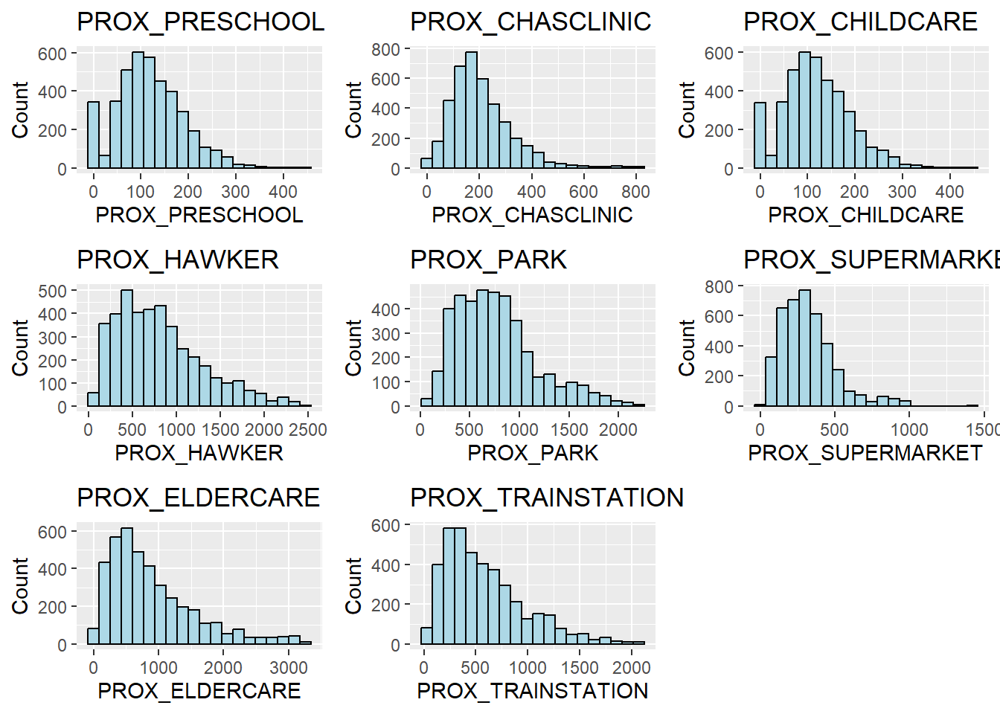
The histograms reveal a consistent right-skewed distribution across all proximity variables. This is typical for distance-based features in Singapore’s dense urban environment, where many units are close to amenities while fewer units lie far away. Below is a variable-by-variable interpretation.
2.3 Drawing Statistical Point Map
We will plot the prices of HDB flats around singapore
tmap_mode("plot")tm_shape(mpsz_svy21)+
tm_polygons() +
tm_shape(HDBresale_sf) +
tm_dots(fill = "resale_price",
fill_alpha = 0.6,
size = 0.5,
fill.scale = tm_scale_intervals(
style="quantile")) +
tm_view(set_zoom_limits = c(11,14))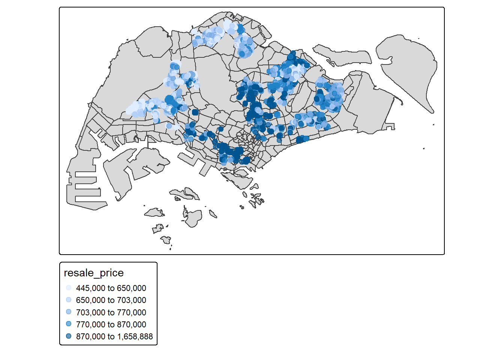
tmap_mode("plot")As we can see flats in the central region and the eastcoast region tend to be more expensive. Flats in the north and west are much more affordable.
2.4 Summary statistics of key variables
To further explore the relationships between HDB resale prices and key structural and locational attributes, we generated a series of scatterplots comparing log-transformed resale prices against each predictor variable. Using geom_point() for individual transactions and geom_smooth() to fit a LOESS trend line, we visualised the potential functional form, monotonicity, and non-linearity between price and each independent variable. The variables examined included structural characteristics (floor area, flat age, and storey height) as well as proximity-based measures of accessibility and amenities (distance to MRT stations, hawker centres, parks, supermarkets, and eldercare facilities). These scatterplots provide an intuitive, visual first pass for assessing model suitability, identifying outliers, and detecting non-linear patterns prior to regression modelling.
vars_for_scatter <- c(
"floor_area_sqm", "STOREY_MID",
"PROX_TRAINSTATION", "PROX_HAWKER",
"PROX_PARK", "PROX_SUPERMARKET",
"PROX_ELDERCARE", "PROX_TRAINSTATION"
)
plot_list2 <- map(vars_for_scatter, ~ {
ggplot(HDBresale_sf,
aes(x = .data[[.x]], y = log_resale_price)) +
geom_point(alpha = 0.3, size = 0.5) +
geom_smooth(se = FALSE) +
labs(title = paste("log(price) vs", .x),
x = .x, y = "log(resale_price)")
})
ggpubr::ggarrange(plotlist = plot_list2,
ncol = 3, nrow = 3)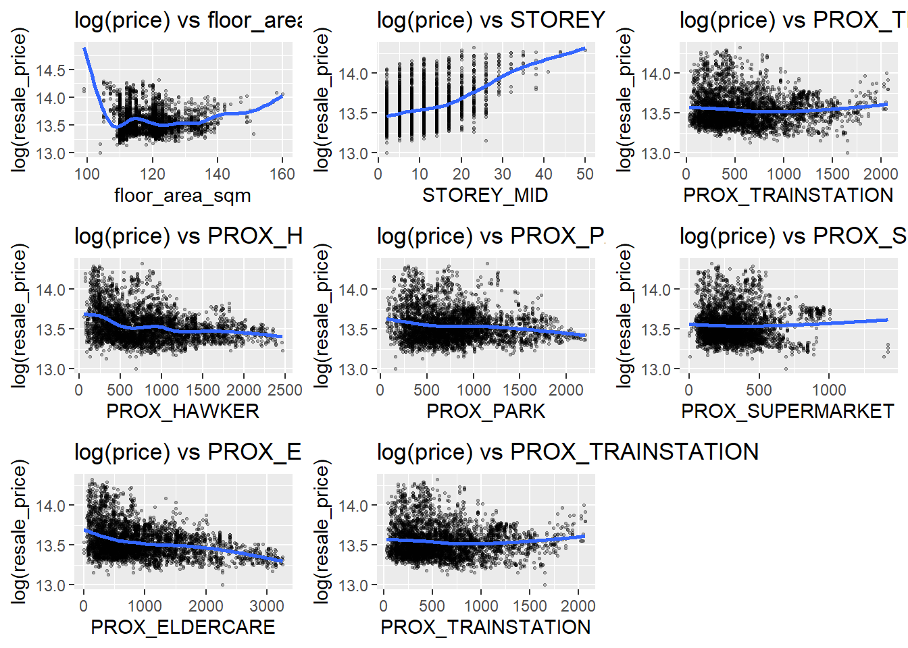
The scatterplots reveal several important behavioural patterns. Floor area shows a strong positive association with resale price, though with diminishing marginal returns, while AGE displays a non-linear relationship—prices fall sharply as flats age but flatten out for very old units. Higher STOREY_MID levels correspond clearly to higher prices, reflecting the common preference for high-floor units. Most proximity variables show a negative slope: prices tend to be higher when flats are closer to amenities such as MRT stations, hawker centres, parks, supermarkets, and eldercare facilities. These relationships are generally smooth but exhibit varying degrees of curvature, suggesting that linear OLS models may not fully capture spatially varying effects. Combined, the patterns support the use of a hedonic pricing model and, given visible non-linearity and spatial clustering, motivate the need for geographically weighted modelling to better account for local variation in price drivers.
2.4.2 Spatial Variation in HDB Resale Prices Across Planning Areas
We spatially joined each HDB resale transaction to Singapore’s planning areas using st_join() with point-in-polygon matching based on the Master Plan subzone boundaries. Planning area names were added to each transaction, and areas with fewer than 20 sales were excluded to ensure reliable comparisons. A horizontal boxplot was then constructed to visualise the distribution of log-transformed resale prices within each planning area. The boxplots summarise the central tendency, dispersion, and extreme values of local resale markets, providing a clear visual profile of how pricing varies across the island.
HDBresale_sf_pa <- st_join(
HDBresale_sf,
mpsz_svy21 %>% select(SUBZONE_N, PLN_AREA_N),
join = st_within,
left = TRUE
)
HDBresale_sf_pa %>%
st_drop_geometry() %>%
count(PLN_AREA_N, sort = TRUE) %>%
head()# A tibble: 6 × 2
PLN_AREA_N n
<chr> <int>
1 SENGKANG 452
2 TAMPINES 366
3 WOODLANDS 364
4 JURONG WEST 331
5 PUNGGOL 317
6 CHOA CHU KANG 264HDBresale_sf_pa %>%
st_drop_geometry() %>%
filter(!is.na(PLN_AREA_N)) %>%
group_by(PLN_AREA_N) %>%
filter(n() >= 20) %>% # keep only areas with at least 20 sales
ungroup() %>%
ggplot(aes(x = reorder(PLN_AREA_N, log_resale_price, median),
y = log_resale_price)) +
geom_boxplot(outlier.alpha = 0.3) +
coord_flip() +
labs(x = "Planning Area",
y = "log(resale_price)",
title = "Distribution of log(HDB resale prices) by Planning Area")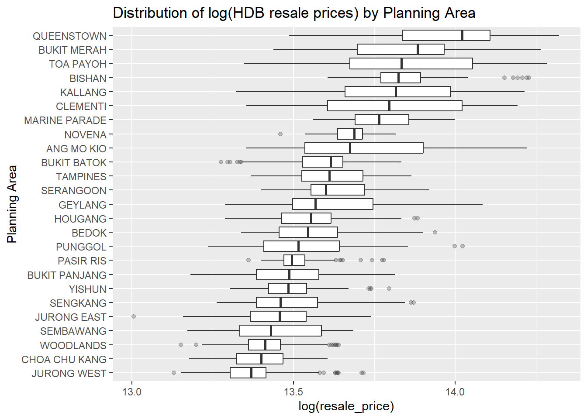
The boxplot reveals strong spatial heterogeneity in resale prices. Mature, centrally located areas such as Queenstown, Bukit Merah, Toa Payoh, Bishan, and Kallang exhibit both higher median prices and more compact distributions, reflecting stable demand and consistent housing characteristics. In contrast, peripheral towns such as Woodlands, Choa Chu Kang, Sembawang, and Jurong West show lower medians and wider spreads, indicative of more varied housing stock and weaker price pressures. The distinct gap between central and suburban regions highlights the influence of location, accessibility, and neighbourhood maturity on resale prices, reinforcing the need for geographically weighted methods to model these spatially varying relationships.
2.4.3 Spatial Pattern of Mean HDB Resale Prices by Planning Area
Each polygon represents a planning area, shaded by the mean log(resale price) of 5-room HDB transactions within that area. Transactions were first spatially joined to planning areas, then the mean price and mean log(price) were computed per area. These summary statistics were merged back to the planning area layer and mapped using a quantile-based “Blues” colour scale, so darker shades correspond to higher average resale prices and lighter shades to lower ones. Areas with no 5-room resale transactions in the study period are shown in grey as “Missing”.
# Compute mean price per planning area
price_pa <- HDBresale_sf_pa %>%
st_drop_geometry() %>%
filter(!is.na(PLN_AREA_N)) %>%
group_by(PLN_AREA_N) %>%
summarise(
mean_price = mean(resale_price, na.rm = TRUE),
mean_log_price = mean(log_resale_price, na.rm = TRUE),
n = n()
)
# Join back to planning area polygons
mpsz_price <- mpsz_svy21 %>%
left_join(price_pa, by = c("PLN_AREA_N"))
tmap_mode("plot")
tm_shape(mpsz_price) +
tm_polygons(
col = "mean_log_price",
style = "quantile",
n = 5,
palette = "Blues",
title = "Mean log(price)"
) +
tm_layout(
main.title = "Mean HDB Resale Prices by Planning Area",
legend.outside = TRUE
)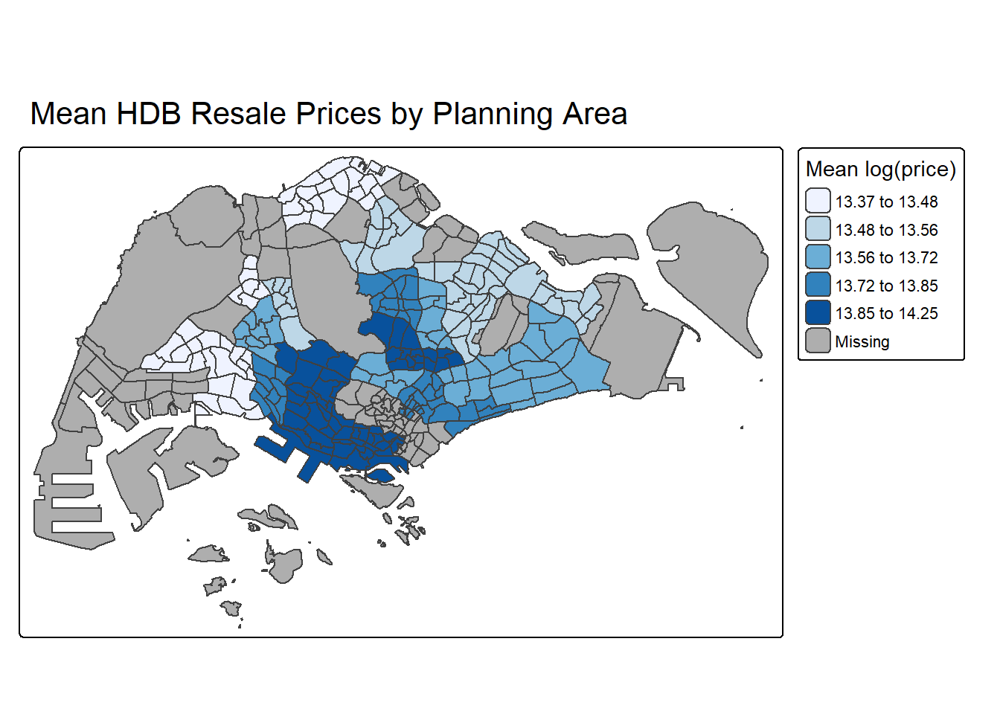
The map shows a clear central-to-peripheral price gradient. Planning areas in the central and city-fringe region—such as Queenstown, Bukit Merah, Kallang/Whampoa, Toa Payoh and Bishan—form a dark-blue core with the highest mean resale prices, reflecting strong accessibility, mature amenities and established demand. Surrounding towns in the east and north-east (e.g. Tampines, Pasir Ris, Sengkang, Punggol) exhibit intermediate values, while outer western and northern areas (e.g. Jurong West, Choa Chu Kang, Woodlands, Sembawang) are generally lighter, indicating lower average prices. This broad spatial pattern supports the hypothesis that location at the planning-area scale is a major determinant of resale value, and it motivates the use of geographically weighted models to capture finer local variations within and across these areas.
2.4.4 Spatial Distribution of Flat Age and MRT Accessibility
Two geospatial dot maps were created to examine the spatial variation of two key structural and locational predictors: flat age (AGE) and distance to the nearest MRT station (PROX_TRAINSTATION). Each resale transaction is plotted as a point overlaid on the Master Plan planning area boundaries. Points are coloured using quantile-based palettes (“YlOrRd” for AGE and “GnBu” for MRT proximity) to emphasise relative differences across the island. The first map shows how the age of flats varies spatially, while the second illustrates how close units are to MRT stations. This side-by-side arrangement allows direct visual comparison of structural ageing patterns and transport accessibility across Singapore.
tmap_mode("plot")
AGE_map <- tm_shape(mpsz_svy21) +
tm_polygons(alpha = 0.1) +
tm_shape(HDBresale_sf) +
tm_dots(
col = "AGE",
palette = "YlOrRd",
style = "quantile",
size = 0.5,
title = "Age (years)"
) +
tm_layout(main.title = "Spatial Distribution of Flat Age")
MRTprox_map <- tm_shape(mpsz_svy21) +
tm_polygons(alpha = 0.1) +
tm_shape(HDBresale_sf) +
tm_dots(
col = "PROX_TRAINSTATION",
palette = "GnBu",
style = "quantile",
size = 0.5,
title = "Distance to MRT (m)"
) +
tm_layout(main.title = "Distance to Nearest MRT Station")
tmap_arrange(AGE_map, MRTprox_map,
ncol = 2, asp = 1, sync = TRUE)
The spatial distribution of flat age shows that older HDB flats are heavily concentrated in the central and mature estates, such as Queenstown, Bukit Merah, Toa Payoh, and Ang Mo Kio. These areas were developed earlier, so many units exceed 30–40 years in age. In contrast, newer flats—generally under 15 years old—are clustered in newer towns such as Punggol, Sengkang, and parts of Jurong and Tampines. This reflects Singapore’s phased town development and the decentralisation strategy in recent decades.
The MRT proximity map reveals a different spatial pattern. Flats closer to MRT stations (light green shades) are mostly found in the central, north-east, and eastern regions, where the rail network is densest. Areas with greater distances to MRT stations (darker blue) typically lie in the outskirts—such as parts of Woodlands, Choa Chu Kang, and northern Yishun—where station spacing is wider. Notably, even within the same town, accessibility varies, creating micro-pockets of highly accessible versus more isolated blocks.
Taken together, these maps highlight two key insights:
Age and accessibility vary independently across space. Older flats are not necessarily further from MRT stations, and newer neighbourhoods may still have inconsistent rail coverage.
These spatial disparities likely contribute to systematic variation in resale prices across different regions, reinforcing the need for spatial controls when modelling housing values.
2.4.5 Effect of MRT Distance on HDB Resale Prices
The scatterplot visualises the relationship between log(resale price) and the log of distance to the nearest MRT station, with each point representing an HDB resale transaction. The fitted smooth curve highlights the overall trend across the data. By applying logarithmic transformations to both variables, the plot reduces skewness from long-distance outliers and clarifies any underlying non-linear patterns.
HDBresale_sf <- HDBresale_sf %>%
mutate(
log_PROX_TRAIN = log(PROX_TRAINSTATION + 1),
log_PROX_HAWKER = log(PROX_HAWKER + 1)
)
ggplot(HDBresale_sf,
aes(x = log_PROX_TRAIN, y = log_resale_price)) +
geom_point(alpha = 0.3, size = 0.5) +
geom_smooth(se = FALSE) +
labs(
title = "log(price) vs log(distance to MRT)",
x = "log(distance to MRT + 1)",
y = "log(resale_price)"
)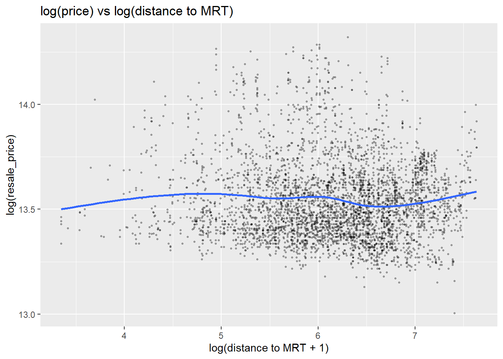
Interestingly, the trend is relatively flat, suggesting that after log-transformation, distance to MRT alone has only a weak marginal effect on resale prices. The smoothed line dips slightly around log(distance) ≈ 6 (roughly 400–500 m), where prices appear marginally lower, but rises again at larger distances—indicating no consistent monotonic relationship. This pattern suggests that MRT proximity in isolation does not strongly predict price, likely because (i) many towns have multiple accessibility alternatives (e.g., buses), (ii) other factors such as flat age, floor area, and planning area dominate pricing, and (iii) distance effects may vary spatially (e.g., central vs. suburban contexts). This flat trend reinforces the need for multivariate modelling and spatial controls to properly capture MRT effects.
3 Hedonic Pricing Modelling in R
building hedonic pricing models for HDB units using lm() of R base
3.1 Simple Linear Regression Method
First, we will build a simple linear regression model by using resale_price as the dependent variable and floor_area_sqm as the independent variable.
HDBslr <- lm(formula=resale_price ~ floor_area_sqm,
data = HDBresale_sf)lm() returns an object of class “lm” or for multiple responses of class c(“mlm”, “lm”).
The functions summary() and anova() can be used to obtain and print a summary and analysis of variance table of the results. The generic accessor functions coefficients, effects, fitted.values and residuals extract various useful features of the value returned by lm.
summary(HDBslr)
Call:
lm(formula = resale_price ~ floor_area_sqm, data = HDBresale_sf)
Residuals:
Min 1Q Median 3Q Max
-334629 -115215 -43094 60214 882713
Coefficients:
Estimate Std. Error t value Pr(>|t|)
(Intercept) 799589.3 43220.5 18.500 <2e-16 ***
floor_area_sqm -191.9 366.6 -0.523 0.601
---
Signif. codes: 0 '***' 0.001 '**' 0.01 '*' 0.05 '.' 0.1 ' ' 1
Residual standard error: 169800 on 4073 degrees of freedom
Multiple R-squared: 6.728e-05, Adjusted R-squared: -0.0001782
F-statistic: 0.274 on 1 and 4073 DF, p-value: 0.6007The output report reveals that the SELLING_PRICE for 4 room flats cannot be explained by using the formula:
*y = 799589.3 - 191.9(x)*The R-squared of 0.2987 reveals that the simple regression model built is able to explain about 29% of the resale prices.
Since p > 0.05, the effect of floor area is not significant. We fail to reject the null hypothesis that the slope is 0. There is no evidence that floor area alone predicts resale price in this dataset.
This is expected because resale price is influenced by storey, location, flat type, remaining lease, age, etc. Floor area alone is too weak when comparing all 4 room flats.
Model fit
R-squared: 0.000067
Adjusted R-squared: ≈ 0
This means the model explains only 0.0067% of the variation in resale prices—essentially zero. It has no predictive power
ggplot(data=HDBresale_sf,
aes(x=`floor_area_sqm`, y=`resale_price`)) +
geom_point() +
geom_smooth(method = lm)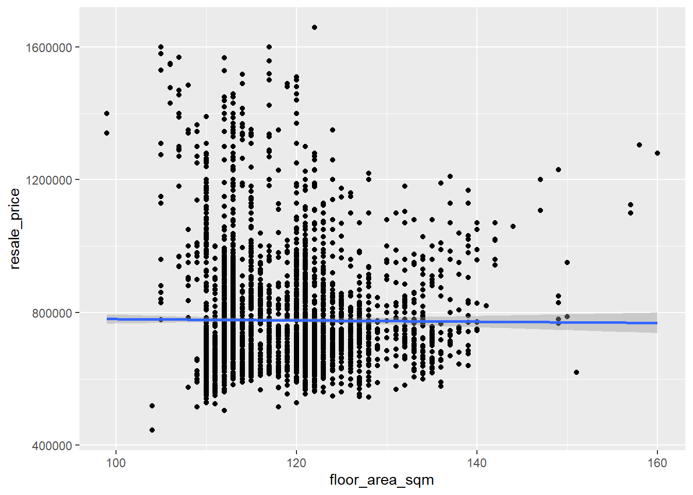
A non-significant slope with an R-squared near zero means changes in floor area do not systematically affect resale prices when considered alone.
The simple linear regression model
resale price∼floor area
does not significantly explain resale prices. The slope is not statistically different from zero, the R-squared is effectively zero, and the model fails the overall significance test. This shows floor area alone is not sufficient to explain resale prices in Singapore—other factors like flat age, location, storey height, and amenity proximity must be included.
3.2 Multiple Linear Regression Method
3.2.1 Visualising the relationships of the independent variables
Before building a muulti linear regression model, we need to plot a correlation matrix to ensure none of the x variables are highly correlated.
Correlation Matrix
library(corrplot)
num_vars <- HDBresale_sf %>%
st_drop_geometry() %>%
select(
floor_area_sqm, AGE, STOREY_MID,
starts_with("PROX"),
log_resale_price
)
corr_matrix <- cor(num_vars, use = "complete.obs")
corrplot(corr_matrix,diag = FALSE,
order = "AOE",
tl.pos = "td",
tl.cex = 0.5,
method = "number",
type = "upper")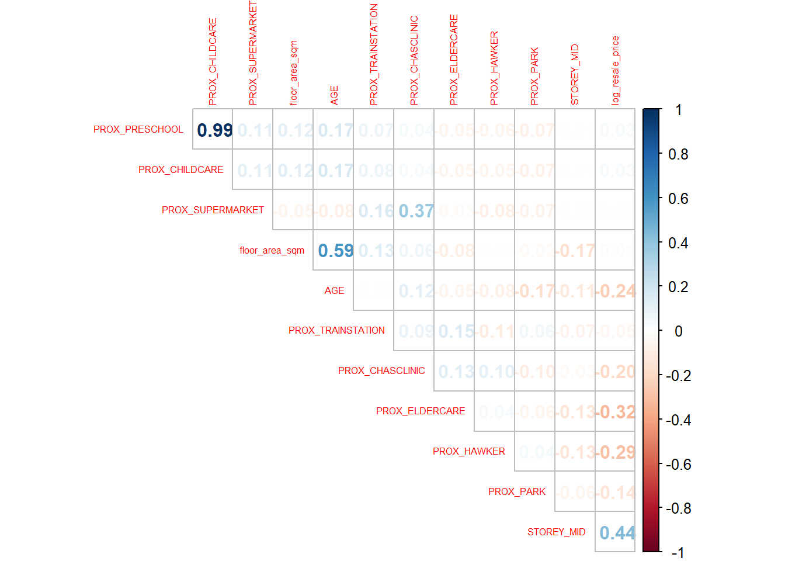
Prox preschoon and prox child care can be removed as they arerepeating and pracrically the same thing. Hence we will only keep prox preschool
3.3 Building a hedonic pricing model using multiple linear regression method
HDBmlr <- lm(
formula = resale_price ~ floor_area_sqm + AGE + PROX_ELDERCARE +
PROX_HAWKER + PROX_PARK +
PROX_SUPERMARKET +
STOREY_MID + PROX_PRESCHOOL +
PROX_TRAINSTATION + PROX_CHASCLINIC,
data=HDBresale_sf)
summary(HDBmlr)
Call:
lm(formula = resale_price ~ floor_area_sqm + AGE + PROX_ELDERCARE +
PROX_HAWKER + PROX_PARK + PROX_SUPERMARKET + STOREY_MID +
PROX_PRESCHOOL + PROX_TRAINSTATION + PROX_CHASCLINIC, data = HDBresale_sf)
Residuals:
Min 1Q Median 3Q Max
-360506 -76771 -14726 53865 593226
Coefficients:
Estimate Std. Error t value Pr(>|t|)
(Intercept) 254869.604 38907.055 6.551 6.44e-11 ***
floor_area_sqm 6743.323 344.393 19.580 < 2e-16 ***
AGE -5918.990 205.834 -28.756 < 2e-16 ***
PROX_ELDERCARE -62.251 3.041 -20.473 < 2e-16 ***
PROX_HAWKER -90.653 4.177 -21.700 < 2e-16 ***
PROX_PARK -83.300 4.958 -16.801 < 2e-16 ***
PROX_SUPERMARKET -22.873 12.082 -1.893 0.058400 .
STOREY_MID 10257.015 333.258 30.778 < 2e-16 ***
PROX_PRESCHOOL 83.193 28.804 2.888 0.003894 **
PROX_TRAINSTATION -17.868 5.293 -3.376 0.000743 ***
PROX_CHASCLINIC -123.599 18.409 -6.714 2.16e-11 ***
---
Signif. codes: 0 '***' 0.001 '**' 0.01 '*' 0.05 '.' 0.1 ' ' 1
Residual standard error: 124300 on 4064 degrees of freedom
Multiple R-squared: 0.4652, Adjusted R-squared: 0.4639
F-statistic: 353.5 on 10 and 4064 DF, p-value: < 2.2e-16The model achieves an R-squared of 0.465, indicating that approximately 46.5% of the variation in resale prices is explained by the included predictors. This is a substantial improvement over the earlier simple regression and is expected because housing prices are influenced by many spatial and structural factors simultaneously.
The overall F-test is highly significant (p < 2.2e-16), meaning the model as a whole provides strong explanatory power beyond the intercept-only model.
Key insight:
Floor area was not significant in the simple regression because several important variables—such as flat age, storey level, and locational attributes—were omitted, causing omitted variable bias. Many of these factors are correlated with floor area (e.g., older flats tend to be larger but cheaper; central flats tend to be smaller but more expensive), which suppressed the apparent effect of size on resale price.
After controlling for these confounders in the multiple regression, the true positive relationship between floor area and resale price becomes clear and highly significant.
3.4 Revising the model
Let’s remove PROX_SUPERMARKET (p = 0.058) > 0.05. since it is not statistically significant.
HDBmlr1 <- lm(
formula = resale_price ~ floor_area_sqm + AGE + PROX_ELDERCARE +
PROX_HAWKER + PROX_PARK +
STOREY_MID + PROX_PRESCHOOL +
PROX_TRAINSTATION + PROX_CHASCLINIC,
data=HDBresale_sf)
summary(HDBmlr1)
Call:
lm(formula = resale_price ~ floor_area_sqm + AGE + PROX_ELDERCARE +
PROX_HAWKER + PROX_PARK + STOREY_MID + PROX_PRESCHOOL + PROX_TRAINSTATION +
PROX_CHASCLINIC, data = HDBresale_sf)
Residuals:
Min 1Q Median 3Q Max
-356579 -76330 -14699 53368 597066
Coefficients:
Estimate Std. Error t value Pr(>|t|)
(Intercept) 246663.259 38677.132 6.377 2.00e-10 ***
floor_area_sqm 6758.892 344.405 19.625 < 2e-16 ***
AGE -5865.911 203.981 -28.757 < 2e-16 ***
PROX_ELDERCARE -61.579 3.021 -20.385 < 2e-16 ***
PROX_HAWKER -89.670 4.146 -21.626 < 2e-16 ***
PROX_PARK -82.691 4.949 -16.708 < 2e-16 ***
STOREY_MID 10282.793 333.085 30.871 < 2e-16 ***
PROX_PRESCHOOL 77.180 28.637 2.695 0.00707 **
PROX_TRAINSTATION -19.226 5.246 -3.665 0.00025 ***
PROX_CHASCLINIC -137.332 16.925 -8.114 6.42e-16 ***
---
Signif. codes: 0 '***' 0.001 '**' 0.01 '*' 0.05 '.' 0.1 ' ' 1
Residual standard error: 124400 on 4065 degrees of freedom
Multiple R-squared: 0.4647, Adjusted R-squared: 0.4636
F-statistic: 392.2 on 9 and 4065 DF, p-value: < 2.2e-16After removing the statistically insignificant predictor PROX_SUPERMARKET, the updated model continues to perform strongly, with an R² = 0.4647 and Adjusted R² = 0.4636. This means the refined model explains 46.4% of the variation in resale prices — almost identical to the earlier model — confirming that PROX_SUPERMARKET contributed little explanatory power.
The overall F-test remains highly significant (p < 2.2e-16), indicating the model as a whole reliably explains resale prices.
3.5 Preparing Publication Quality Table: gtsummary method
tbl_regression(HDBmlr1, intercept = TRUE)| Characteristic | Beta | 95% CI | p-value |
|---|---|---|---|
| (Intercept) | 246,663 | 170,835, 322,492 | <0.001 |
| floor_area_sqm | 6,759 | 6,084, 7,434 | <0.001 |
| AGE | -5,866 | -6,266, -5,466 | <0.001 |
| PROX_ELDERCARE | -62 | -68, -56 | <0.001 |
| PROX_HAWKER | -90 | -98, -82 | <0.001 |
| PROX_PARK | -83 | -92, -73 | <0.001 |
| STOREY_MID | 10,283 | 9,630, 10,936 | <0.001 |
| PROX_PRESCHOOL | 77 | 21, 133 | 0.007 |
| PROX_TRAINSTATION | -19 | -30, -8.9 | <0.001 |
| PROX_CHASCLINIC | -137 | -171, -104 | <0.001 |
| Abbreviation: CI = Confidence Interval | |||
tbl_regression(HDBmlr1,
intercept = TRUE) %>%
add_glance_source_note(
label = list(sigma ~ "\U03C3"),
include = c(r.squared, adj.r.squared,
AIC, statistic,
p.value, sigma))| Characteristic | Beta | 95% CI | p-value |
|---|---|---|---|
| (Intercept) | 246,663 | 170,835, 322,492 | <0.001 |
| floor_area_sqm | 6,759 | 6,084, 7,434 | <0.001 |
| AGE | -5,866 | -6,266, -5,466 | <0.001 |
| PROX_ELDERCARE | -62 | -68, -56 | <0.001 |
| PROX_HAWKER | -90 | -98, -82 | <0.001 |
| PROX_PARK | -83 | -92, -73 | <0.001 |
| STOREY_MID | 10,283 | 9,630, 10,936 | <0.001 |
| PROX_PRESCHOOL | 77 | 21, 133 | 0.007 |
| PROX_TRAINSTATION | -19 | -30, -8.9 | <0.001 |
| PROX_CHASCLINIC | -137 | -171, -104 | <0.001 |
| Abbreviation: CI = Confidence Interval | |||
| R² = 0.465; Adjusted R² = 0.464; AIC = 107,185; Statistic = 392; p-value = <0.001; σ = 124,386 | |||
3.6 Regression Diagnostics
3.6.1 Multicollinearity test
check_collinearity(HDBmlr1)# Check for Multicollinearity
Low Correlation
Term VIF VIF 95% CI adj. VIF Tolerance Tolerance 95% CI
floor_area_sqm 1.65 [1.58, 1.72] 1.28 0.61 [0.58, 0.63]
AGE 1.68 [1.61, 1.76] 1.30 0.60 [0.57, 0.62]
PROX_ELDERCARE 1.08 [1.05, 1.13] 1.04 0.93 [0.89, 0.95]
PROX_HAWKER 1.07 [1.04, 1.11] 1.03 0.94 [0.90, 0.96]
PROX_PARK 1.06 [1.04, 1.11] 1.03 0.94 [0.90, 0.96]
STOREY_MID 1.08 [1.05, 1.12] 1.04 0.93 [0.89, 0.95]
PROX_PRESCHOOL 1.04 [1.02, 1.09] 1.02 0.96 [0.91, 0.98]
PROX_TRAINSTATION 1.09 [1.06, 1.14] 1.05 0.92 [0.88, 0.94]
PROX_CHASCLINIC 1.06 [1.04, 1.11] 1.03 0.94 [0.90, 0.97]The model has no multicollinearity problems.
mlr.vif <- check_collinearity(HDBmlr1)
plot(mlr.vif)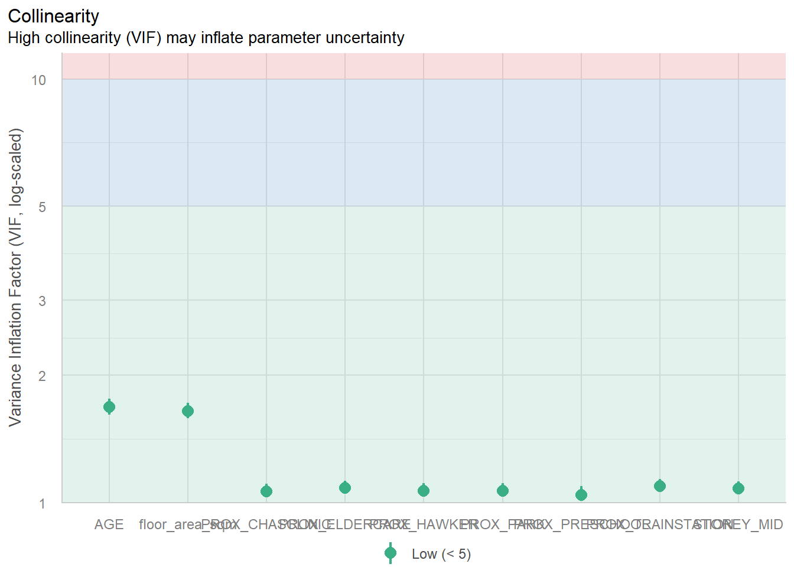
Since the VIF of the independent variables are less than 10. We can safely conclude that there are no sign of multicollinearity among the independent variables.
3.6.2 Test for Non-Linearity
check_model(HDBmlr1,
check = "linearity")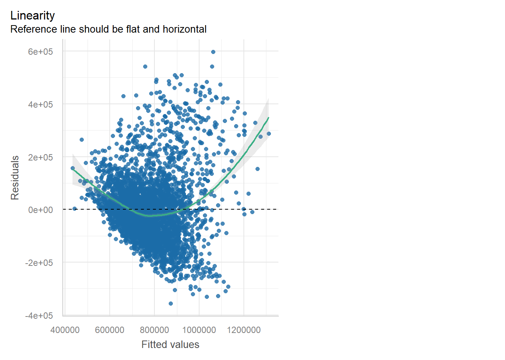
The figure above reveals that most of the data poitns are scattered around the 0 line, hence we can safely conclude that the relationships between the dependent variable and independent variables are linear.
3.6.3 Test for Normality Assumption
check_normality(HDBmlr1)Warning: Non-normality of residuals detected (p < .001).Residuals Are Not Normally Distributed
The print above reveals that the p-value of the normality assumption test is less than alpha value of 0.05. Hence we reject the normality assumption at 95% confident level.
plot(check_normality(HDBmlr1),
type = "qq")
Q-Q plot above below shows that majority of the data points are felt along the zero line.
check_model(HDBmlr1,
check= "normality")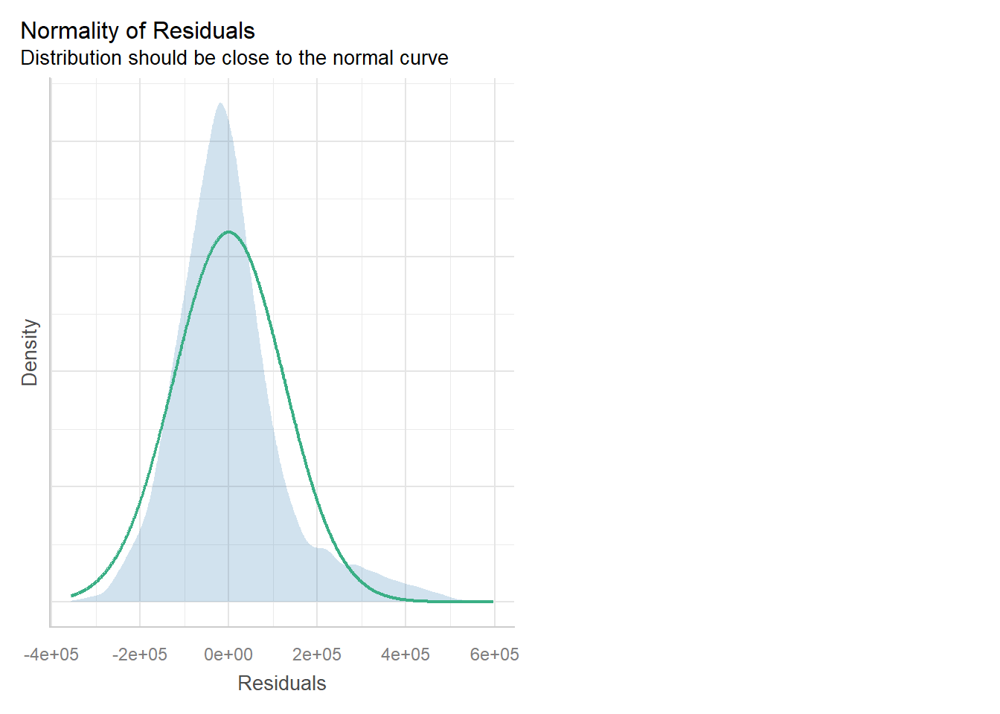
The figure reveals that the residual of the multiple linear regression model (i.e. HDBmlr1) is resemble normal distribution
3.6.4 Testing for Spatial Autocorrelation
mlr.output <- as.data.frame(HDBmlr1$residuals)HDBresale_sf <- cbind(HDBresale_sf,
HDBmlr1$residuals) %>%
rename(`MLR_RES` = `HDBmlr1.residuals`)tmap_mode("plot")tm_shape(mpsz_svy21) +
tm_polygons(fill_alpha = 0.4) +
tm_shape(HDBresale_sf) +
tm_dots(
fill = "MLR_RES",
size = 0.7,
col = "black",
fill.scale = tm_scale(
n = 10,
values = rev(
brewer.pal(11, "RdBu")),
style = "quantile",
midpoint = NA),
fill.legend = tm_legend(title = "Residuals")
) +
tm_title("LM Residuals (Quantile Classification)") +
tm_layout(legend.outside = TRUE) +
tm_view(set_zoom_limits = c(11,14))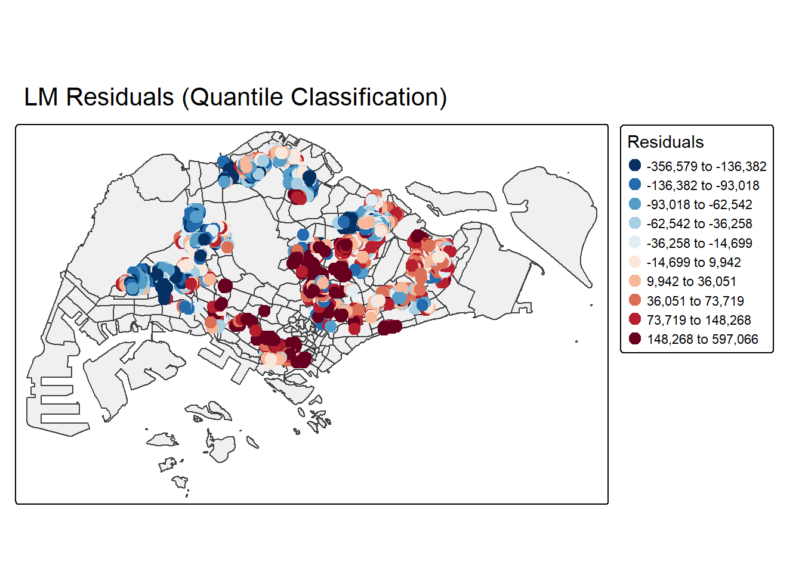
tmap_mode("plot")The clear clustering of high and low residual values across neighbourhoods suggests spatial autocorrelation.
To prove that our observation is indeed true, Global Moran’s I test will be performed
First, we will compute the distance-based weight matrix by using st_dist_band() function of sfdep.
HDBresale_sf <- HDBresale_sf %>%
mutate(
nb = st_dist_band(
st_geometry(geometry),
upper = 1500),
wt = st_weights(
nb, style = "W"),
.before = 1) set.seed(1234)
global_moran_perm(
HDBresale_sf$MLR_RES,
nb = HDBresale_sf$nb,
wt = HDBresale_sf$wt,
alternative = "two.sided",
nsim = 499)
Monte-Carlo simulation of Moran I
data: x
weights: listw
number of simulations + 1: 500
statistic = 0.50654, observed rank = 500, p-value < 2.2e-16
alternative hypothesis: two.sidedThe Global Moran’s I test confirms that the residuals from the multiple linear regression model exhibit significant spatial autocorrelation (Moran’s I = 0.5065, p < 2.2e-16). This indicates that residuals are spatially clustered rather than randomly distributed. Therefore, the model violates the assumption of spatial independence, suggesting that important spatial processes remain unaccounted for. A more appropriate spatial regression model—such as a Geographically Weighted Regression (GWR)—should be considered.
4 Building Hedonic Pricing Models using GWRmodel
We are now going to use a geographically weighted regression model. Since our multi regression residuals showed that the was not capturing some important location dependent factors that influence housing prices.
4.1 Building Fixed Bandwidth GWR Model
4.1.1 Computing fixed bandwith
bw.fixed <- bw.gwr(
formula = resale_price ~ floor_area_sqm + AGE + PROX_ELDERCARE + PROX_PRESCHOOL +
PROX_HAWKER + PROX_PARK +
PROX_SUPERMARKET +
STOREY_MID + PROX_CHASCLINIC + PROX_TRAINSTATION,
data=HDBresale_sf,
approach="CV",
kernel="gaussian",
adaptive=FALSE,
longlat=FALSE)Take a cup of tea and have a break, it will take a few minutes.
-----A kind suggestion from GWmodel development group
Fixed bandwidth: 19232.05 CV score: 5.895999e+13
Fixed bandwidth: 11888.44 CV score: 5.316767e+13
Fixed bandwidth: 7349.836 CV score: 4.191598e+13
Fixed bandwidth: 4544.826 CV score: 2.849943e+13
Fixed bandwidth: 2811.234 CV score: 1.784104e+13
Fixed bandwidth: 1739.815 CV score: 1.216144e+13
Fixed bandwidth: 1077.642 CV score: 9.258286e+12
Fixed bandwidth: 668.3961 CV score: 7.401789e+12
Fixed bandwidth: 415.4684 CV score: 7.627965e+12
Fixed bandwidth: 824.714 CV score: 8.009869e+12
Fixed bandwidth: 571.7863 CV score: 7.176018e+12
Fixed bandwidth: 512.0782 CV score: 7.153906e+12
Fixed bandwidth: 475.1765 CV score: 7.215871e+12
Fixed bandwidth: 534.8847 CV score: 7.145969e+12
Fixed bandwidth: 548.9798 CV score: 7.152093e+12
Fixed bandwidth: 526.1734 CV score: 7.14624e+12
Fixed bandwidth: 540.2685 CV score: 7.147403e+12
Fixed bandwidth: 531.5572 CV score: 7.145683e+12
Fixed bandwidth: 529.5008 CV score: 7.145745e+12
Fixed bandwidth: 532.8282 CV score: 7.145737e+12
Fixed bandwidth: 530.7717 CV score: 7.145685e+12
Fixed bandwidth: 532.0427 CV score: 7.145695e+12
Fixed bandwidth: 531.2572 CV score: 7.145681e+12
Fixed bandwidth: 531.0718 CV score: 7.145681e+12
Fixed bandwidth: 531.3718 CV score: 7.145681e+12
Fixed bandwidth: 531.1864 CV score: 7.145681e+12
Fixed bandwidth: 531.1426 CV score: 7.145681e+12
Fixed bandwidth: 531.2134 CV score: 7.145681e+12
Fixed bandwidth: 531.2301 CV score: 7.145681e+12
Fixed bandwidth: 531.2031 CV score: 7.145681e+12
Fixed bandwidth: 531.2198 CV score: 7.145681e+12
Fixed bandwidth: 531.2238 CV score: 7.145681e+12
Fixed bandwidth: 531.2174 CV score: 7.145681e+12
Fixed bandwidth: 531.2213 CV score: 7.145681e+12
Fixed bandwidth: 531.2189 CV score: 7.145681e+12
Fixed bandwidth: 531.2204 CV score: 7.145681e+12
Fixed bandwidth: 531.2195 CV score: 7.145681e+12
Fixed bandwidth: 531.22 CV score: 7.145681e+12
Fixed bandwidth: 531.2197 CV score: 7.145681e+12
Fixed bandwidth: 531.2196 CV score: 7.145681e+12
Fixed bandwidth: 531.2197 CV score: 7.145681e+12
Fixed bandwidth: 531.2196 CV score: 7.145681e+12 The optimal fixed bandwidth for the GWR model was determined using cross-validation. During the search, bw.gwr() evaluated a wide range of candidate bandwidths, beginning with very large neighbourhood sizes (≈19 km) and systematically shrinking them while tracking changes in the CV score. The CV score decreased rapidly as the bandwidth narrowed, indicating that smaller neighbourhoods better capture local variation in HDB resale prices. The score eventually stabilised and reached its minimum at approximately 531 metres, which the algorithm selected as the optimal fixed bandwidth.
This result implies that the relationship between housing attributes and resale prices varies meaningfully over relatively small spatial scales—roughly a 500 m radius, i.e., the scale of a typical HDB precinct. Observations within this distance exert the strongest influence on each local regression, while those farther away are down-weighted under the Gaussian kernel.
Since our data is stored in a projected coordinate system, specifically EPSG 3414, the units are in meters.
4.1.2 GWModel method - fixed bandwith
We are now fitting the Geographically Weighted Regression (GWR) model using the optimal fixed bandwidth obtained earlier (~531 m). The function gwr.basic() calibrates a separate local regression equation for every HDB transaction point, allowing the coefficients to vary across space rather than assuming a single global relationship.
gwr.fixed <- gwr.basic(
formula = resale_price ~ floor_area_sqm + AGE + PROX_ELDERCARE + PROX_PRESCHOOL +
PROX_HAWKER + PROX_PARK +
PROX_SUPERMARKET +
STOREY_MID + PROX_CHASCLINIC + PROX_TRAINSTATION,
data=HDBresale_sf,
bw=bw.fixed,
kernel = 'gaussian',
longlat = FALSE)gwr.fixed ***********************************************************************
* Package GWmodel *
***********************************************************************
Program starts at: 2025-11-17 15:27:05.412696
Call:
gwr.basic(formula = resale_price ~ floor_area_sqm + AGE + PROX_ELDERCARE +
PROX_PRESCHOOL + PROX_HAWKER + PROX_PARK + PROX_SUPERMARKET +
STOREY_MID + PROX_CHASCLINIC + PROX_TRAINSTATION, data = HDBresale_sf,
bw = bw.fixed, kernel = "gaussian", longlat = FALSE)
Dependent (y) variable: resale_price
Independent variables: floor_area_sqm AGE PROX_ELDERCARE PROX_PRESCHOOL PROX_HAWKER PROX_PARK PROX_SUPERMARKET STOREY_MID PROX_CHASCLINIC PROX_TRAINSTATION
Number of data points: 4075
***********************************************************************
* Results of Global Regression *
***********************************************************************
Call:
lm(formula = formula, data = data)
Residuals:
Min 1Q Median 3Q Max
-360506 -76771 -14726 53865 593226
Coefficients:
Estimate Std. Error t value Pr(>|t|)
(Intercept) 254869.604 38907.055 6.551 6.44e-11 ***
floor_area_sqm 6743.323 344.393 19.580 < 2e-16 ***
AGE -5918.990 205.834 -28.756 < 2e-16 ***
PROX_ELDERCARE -62.251 3.041 -20.473 < 2e-16 ***
PROX_PRESCHOOL 83.193 28.804 2.888 0.003894 **
PROX_HAWKER -90.653 4.177 -21.700 < 2e-16 ***
PROX_PARK -83.300 4.958 -16.801 < 2e-16 ***
PROX_SUPERMARKET -22.873 12.082 -1.893 0.058400 .
STOREY_MID 10257.015 333.258 30.778 < 2e-16 ***
PROX_CHASCLINIC -123.599 18.409 -6.714 2.16e-11 ***
PROX_TRAINSTATION -17.868 5.293 -3.376 0.000743 ***
---Significance stars
Signif. codes: 0 '***' 0.001 '**' 0.01 '*' 0.05 '.' 0.1 ' ' 1
Residual standard error: 124300 on 4064 degrees of freedom
Multiple R-squared: 0.4652
Adjusted R-squared: 0.4639
F-statistic: 353.5 on 10 and 4064 DF, p-value: < 2.2e-16
***Extra Diagnostic information
Residual sum of squares: 6.283744e+13
Sigma(hat): 124208.7
AIC: 107183.6
AICc: 107183.6
BIC: 103284.1
***********************************************************************
* Results of Geographically Weighted Regression *
***********************************************************************
*********************Model calibration information*********************
Kernel function: gaussian
Fixed bandwidth: 531.2197
Regression points: the same locations as observations are used.
Distance metric: Euclidean distance metric is used.
****************Summary of GWR coefficient estimates:******************
Min. 1st Qu. Median 3rd Qu. Max.
Intercept -5.1400e+06 2.0223e+05 3.9970e+05 6.7074e+05 1972653.54
floor_area_sqm -6.2738e+03 2.4711e+03 4.2399e+03 6.9736e+03 16803.73
AGE -2.8322e+04 -9.1182e+03 -6.7108e+03 -4.4630e+03 76238.85
PROX_ELDERCARE -9.9255e+02 -3.5657e+01 -1.1544e+01 2.2184e+01 571.67
PROX_PRESCHOOL -7.4495e+02 -5.3290e+01 1.9409e+01 7.9485e+01 1082.33
PROX_HAWKER -8.6732e+02 -6.8034e+01 -2.4459e+01 1.6615e+01 613.27
PROX_PARK -4.2463e+02 -3.0407e+01 5.0233e+00 3.2096e+01 993.83
PROX_SUPERMARKET -1.3792e+03 -8.6931e+01 -1.6285e+01 3.1757e+01 1462.08
STOREY_MID 2.0357e+03 4.0931e+03 5.0491e+03 6.6215e+03 21989.49
PROX_CHASCLINIC -1.4403e+03 -6.8323e+01 2.4464e+00 5.9010e+01 938.90
PROX_TRAINSTATION -8.5748e+02 -1.2785e+02 -8.4843e+01 -4.8991e+01 1273.63
************************Diagnostic information*************************
Number of data points: 4075
Effective number of parameters (2trace(S) - trace(S'S)): 830.7303
Effective degrees of freedom (n-2trace(S) + trace(S'S)): 3244.27
AICc (GWR book, Fotheringham, et al. 2002, p. 61, eq 2.33): 97538.47
AIC (GWR book, Fotheringham, et al. 2002,GWR p. 96, eq. 4.22): 96587.61
BIC (GWR book, Fotheringham, et al. 2002,GWR p. 61, eq. 2.34): 97466.14
Residual sum of squares: 3.974816e+12
R-square value: 0.9661715
Adjusted R-square value: 0.9575067
***********************************************************************
Program stops at: 2025-11-17 15:27:11.902328 The AICc of the GWR model (97,538.47) is substantially lower than that of the global multiple linear regression model (107,183.6). Because AICc penalizes model complexity, this reduction indicates a significantly better model fit even after accounting for GWR’s larger number of effective parameters. Combined with the sharp reduction in residual sum of squares and the increase in R² from 0.465 (MLR) to 0.966 (GWR), the results strongly suggest that spatially varying relationships are present. Therefore, GWR captures important local housing market dynamics that the global MLR model fails to detect.
4.2 Building Adaptive Bandwidth GWR Model
Because HDB resale transactions are not evenly distributed across Singapore, a fixed bandwidth is not suitable. In dense regions (e.g., Jurong, Tampines, Bukit Merah), a fixed distance would include too many neighbouring transactions, causing excessive smoothing. In contrast, sparse regions (e.g., Sembawang, Lim Chu Kang, Tengah) would include too few neighbours, leading to unstable and unreliable local regressions. Using an adaptive bandwidth ensures that each local model uses a consistent number of nearby observations, resulting in more stable and meaningful GWR estimates across varying spatial densities.
4.2.1 Computing the adaptive bandwidth
bw.adaptive <- bw.gwr(
formula = resale_price ~ floor_area_sqm + AGE + PROX_ELDERCARE + PROX_PRESCHOOL +
PROX_HAWKER + PROX_PARK +
PROX_SUPERMARKET +
STOREY_MID + PROX_CHASCLINIC + PROX_TRAINSTATION,
data=HDBresale_sf,
approach="CV",
kernel="gaussian",
adaptive=TRUE,
longlat=FALSE)Take a cup of tea and have a break, it will take a few minutes.
-----A kind suggestion from GWmodel development group
Adaptive bandwidth: 2526 CV score: 5.57787e+13
Adaptive bandwidth: 1569 CV score: 5.071643e+13
Adaptive bandwidth: 977 CV score: 4.2486e+13
Adaptive bandwidth: 611 CV score: 3.455521e+13
Adaptive bandwidth: 385 CV score: 2.742367e+13
Adaptive bandwidth: 245 CV score: 2.069189e+13
Adaptive bandwidth: 159 CV score: 1.56898e+13
Adaptive bandwidth: 105 CV score: 1.321309e+13
Adaptive bandwidth: 72 CV score: 1.127536e+13
Adaptive bandwidth: 51 CV score: 9.429486e+12
Adaptive bandwidth: 39 CV score: 8.533928e+12
Adaptive bandwidth: 30 CV score: 1.088895e+13
Adaptive bandwidth: 43 CV score: 8.829041e+12
Adaptive bandwidth: 35 CV score: 8.208705e+12
Adaptive bandwidth: 34 CV score: 8.144997e+12
Adaptive bandwidth: 32 CV score: 1.100768e+13
Adaptive bandwidth: 34 CV score: 8.144997e+12 The cross-validation procedure identified an adaptive bandwidth of 34 nearest neighbours, which minimizes the prediction error. This indicates that the housing price relationships are highly localised, with each location requiring only a small subset of nearby observations to model the spatially varying effects effectively.
4.2.2 Constructing the adaptive bandwidth gwr model
gwr.adaptive <- gwr.basic(
formula = resale_price ~ floor_area_sqm + AGE + PROX_ELDERCARE + PROX_PRESCHOOL +
PROX_HAWKER + PROX_PARK +
PROX_SUPERMARKET +
STOREY_MID + PROX_CHASCLINIC + PROX_TRAINSTATION,
data=HDBresale_sf,
bw=bw.adaptive,
kernel = 'gaussian',
adaptive=TRUE,
longlat = FALSE)gwr.adaptive ***********************************************************************
* Package GWmodel *
***********************************************************************
Program starts at: 2025-11-17 15:28:01.676657
Call:
gwr.basic(formula = resale_price ~ floor_area_sqm + AGE + PROX_ELDERCARE +
PROX_PRESCHOOL + PROX_HAWKER + PROX_PARK + PROX_SUPERMARKET +
STOREY_MID + PROX_CHASCLINIC + PROX_TRAINSTATION, data = HDBresale_sf,
bw = bw.adaptive, kernel = "gaussian", adaptive = TRUE, longlat = FALSE)
Dependent (y) variable: resale_price
Independent variables: floor_area_sqm AGE PROX_ELDERCARE PROX_PRESCHOOL PROX_HAWKER PROX_PARK PROX_SUPERMARKET STOREY_MID PROX_CHASCLINIC PROX_TRAINSTATION
Number of data points: 4075
***********************************************************************
* Results of Global Regression *
***********************************************************************
Call:
lm(formula = formula, data = data)
Residuals:
Min 1Q Median 3Q Max
-360506 -76771 -14726 53865 593226
Coefficients:
Estimate Std. Error t value Pr(>|t|)
(Intercept) 254869.604 38907.055 6.551 6.44e-11 ***
floor_area_sqm 6743.323 344.393 19.580 < 2e-16 ***
AGE -5918.990 205.834 -28.756 < 2e-16 ***
PROX_ELDERCARE -62.251 3.041 -20.473 < 2e-16 ***
PROX_PRESCHOOL 83.193 28.804 2.888 0.003894 **
PROX_HAWKER -90.653 4.177 -21.700 < 2e-16 ***
PROX_PARK -83.300 4.958 -16.801 < 2e-16 ***
PROX_SUPERMARKET -22.873 12.082 -1.893 0.058400 .
STOREY_MID 10257.015 333.258 30.778 < 2e-16 ***
PROX_CHASCLINIC -123.599 18.409 -6.714 2.16e-11 ***
PROX_TRAINSTATION -17.868 5.293 -3.376 0.000743 ***
---Significance stars
Signif. codes: 0 '***' 0.001 '**' 0.01 '*' 0.05 '.' 0.1 ' ' 1
Residual standard error: 124300 on 4064 degrees of freedom
Multiple R-squared: 0.4652
Adjusted R-squared: 0.4639
F-statistic: 353.5 on 10 and 4064 DF, p-value: < 2.2e-16
***Extra Diagnostic information
Residual sum of squares: 6.283744e+13
Sigma(hat): 124208.7
AIC: 107183.6
AICc: 107183.6
BIC: 103284.1
***********************************************************************
* Results of Geographically Weighted Regression *
***********************************************************************
*********************Model calibration information*********************
Kernel function: gaussian
Adaptive bandwidth: 34 (number of nearest neighbours)
Regression points: the same locations as observations are used.
Distance metric: Euclidean distance metric is used.
****************Summary of GWR coefficient estimates:******************
Min. 1st Qu. Median 3rd Qu. Max.
Intercept -1.6097e+06 2.3704e+05 4.4261e+05 6.9247e+05 5522251.31
floor_area_sqm -1.8169e+04 2.4896e+03 4.3094e+03 6.9451e+03 15363.48
AGE -1.6365e+04 -9.1935e+03 -6.4635e+03 -4.3711e+03 25906.94
PROX_ELDERCARE -2.3294e+03 -4.3522e+01 -1.5006e+01 1.7075e+01 4919.62
PROX_PRESCHOOL -4.8813e+02 -6.1668e+01 8.9637e+00 6.8707e+01 1455.48
PROX_HAWKER -2.8707e+03 -5.7970e+01 -1.8881e+01 3.2845e+01 1795.99
PROX_PARK -4.5796e+02 -3.8398e+01 -2.7799e-01 3.3973e+01 2435.70
PROX_SUPERMARKET -6.8267e+02 -9.7709e+01 -1.9555e+01 4.8471e+01 410.57
STOREY_MID 2.3793e+03 4.2039e+03 5.2892e+03 6.7140e+03 11092.78
PROX_CHASCLINIC -1.4512e+03 -7.2550e+01 2.3697e+00 5.8099e+01 594.45
PROX_TRAINSTATION -4.0643e+03 -1.3816e+02 -8.9035e+01 -4.6059e+01 2174.02
************************Diagnostic information*************************
Number of data points: 4075
Effective number of parameters (2trace(S) - trace(S'S)): 697.3645
Effective degrees of freedom (n-2trace(S) + trace(S'S)): 3377.636
AICc (GWR book, Fotheringham, et al. 2002, p. 61, eq 2.33): 98816.61
AIC (GWR book, Fotheringham, et al. 2002,GWR p. 96, eq. 4.22): 98093.14
BIC (GWR book, Fotheringham, et al. 2002,GWR p. 61, eq. 2.34): 98034.88
Residual sum of squares: 5.935007e+12
R-square value: 0.9494889
Adjusted R-square value: 0.939057
***********************************************************************
Program stops at: 2025-11-17 15:28:09.158268 Both fixed and adaptive GWR models were estimated to account for the spatial heterogeneity present in HDB resale prices. Although adaptive GWR is typically preferred for datasets with uneven spatial distributions—because it adjusts the bandwidth based on local data density—the results from our analysis indicate that the fixed-bandwidth GWR performs better for this study. The fixed model, calibrated using a constant spatial distance of approximately 531 metres, achieved a substantially lower AICc (97,538.47) and smaller residual sum of squares (3.97 × 10¹²) compared to the adaptive model (AICc = 98,816.61; RSS = 5.94 × 10¹²). It also recorded a higher R² (0.966), indicating a stronger overall fit.
4.3 Visualising GWR Output
4.4 Converting SDF into sf data.frame
We take the GWR results (stored in gwr.fixed$SDF) and turn them into an sf object so we can map fields like Local_R2, yhat, coefficients, etc.
HDBresale_sf.fixed <-
st_as_sf(gwr.fixed$SDF) %>%
st_transform(crs=3414)glimpse(HDBresale_sf.fixed)Rows: 4,075
Columns: 40
$ Intercept <dbl> 367564.5, 367564.5, 1007542.7, 367564.5, 422214.6…
$ floor_area_sqm <dbl> 5842.4737, 5842.4737, -407.7870, 5842.4737, 5202.…
$ AGE <dbl> -11360.302, -11360.302, -8319.442, -11360.302, -1…
$ PROX_ELDERCARE <dbl> 80.112548, 80.112548, -25.213817, 80.112548, 76.7…
$ PROX_PRESCHOOL <dbl> 203.32605, 203.32605, 58.43097, 203.32605, 194.79…
$ PROX_HAWKER <dbl> 144.32712, 144.32712, 323.23166, 144.32712, 150.8…
$ PROX_PARK <dbl> 79.48426, 79.48426, -52.75669, 79.48426, 60.80662…
$ PROX_SUPERMARKET <dbl> -51.629104, -51.629104, 7.727087, -51.629104, -42…
$ STOREY_MID <dbl> 7076.195, 7076.195, 7287.682, 7076.195, 7180.694,…
$ PROX_CHASCLINIC <dbl> 123.94017, 123.94017, -72.28603, 123.94017, 131.4…
$ PROX_TRAINSTATION <dbl> 54.11863, 54.11863, 182.40709, 54.11863, 75.41720…
$ y <dbl> 830000, 865000, 850000, 770000, 838000, 740000, 7…
$ yhat <dbl> 836511.1, 771878.6, 856681.3, 769038.5, 827715.9,…
$ residual <dbl> -6511.0658, 93121.3841, -6681.3248, 961.4595, 102…
$ CV_Score <dbl> 0, 0, 0, 0, 0, 0, 0, 0, 0, 0, 0, 0, 0, 0, 0, 0, 0…
$ Stud_residual <dbl> -0.20915516, 2.92093591, -0.39922525, 0.03016929,…
$ Intercept_SE <dbl> 107039.78, 107039.78, 99064.43, 107039.78, 106004…
$ floor_area_sqm_SE <dbl> 885.8994, 885.8994, 852.7301, 885.8994, 880.4558,…
$ AGE_SE <dbl> 496.4124, 496.4124, 617.7901, 496.4124, 506.9843,…
$ PROX_ELDERCARE_SE <dbl> 17.47160, 17.47160, 32.60056, 17.47160, 17.76743,…
$ PROX_PRESCHOOL_SE <dbl> 85.73308, 85.73308, 92.67182, 85.73308, 86.91325,…
$ PROX_HAWKER_SE <dbl> 26.97995, 26.97995, 31.14242, 26.97995, 26.49909,…
$ PROX_PARK_SE <dbl> 44.36804, 44.36804, 50.17622, 44.36804, 44.80072,…
$ PROX_SUPERMARKET_SE <dbl> 44.26201, 44.26201, 45.74341, 44.26201, 44.44490,…
$ STOREY_MID_SE <dbl> 746.0410, 746.0410, 737.2154, 746.0410, 756.4374,…
$ PROX_CHASCLINIC_SE <dbl> 91.38896, 91.38896, 76.44428, 91.38896, 88.63823,…
$ PROX_TRAINSTATION_SE <dbl> 34.24107, 34.24107, 34.42501, 34.24107, 34.72923,…
$ Intercept_TV <dbl> 3.433905, 3.433905, 10.170580, 3.433905, 3.982984…
$ floor_area_sqm_TV <dbl> 6.5949628, 6.5949628, -0.4782134, 6.5949628, 5.90…
$ AGE_TV <dbl> -22.884805, -22.884805, -13.466455, -22.884805, -…
$ PROX_ELDERCARE_TV <dbl> 4.5853000, 4.5853000, -0.7734167, 4.5853000, 4.31…
$ PROX_PRESCHOOL_TV <dbl> 2.3716174, 2.3716174, 0.6305149, 2.3716174, 2.241…
$ PROX_HAWKER_TV <dbl> 5.3494222, 5.3494222, 10.3791431, 5.3494222, 5.69…
$ PROX_PARK_TV <dbl> 1.7914753, 1.7914753, -1.0514282, 1.7914753, 1.35…
$ PROX_SUPERMARKET_TV <dbl> -1.16644277, -1.16644277, 0.16892239, -1.16644277…
$ STOREY_MID_TV <dbl> 9.484996, 9.484996, 9.885418, 9.484996, 9.492780,…
$ PROX_CHASCLINIC_TV <dbl> 1.3561832, 1.3561832, -0.9456042, 1.3561832, 1.48…
$ PROX_TRAINSTATION_TV <dbl> 1.580518, 1.580518, 5.298679, 1.580518, 2.171577,…
$ Local_R2 <dbl> 0.9559164, 0.9559164, 0.9635649, 0.9559164, 0.955…
$ geometry <POINT [m]> POINT (29412.84 38680.21), POINT (29412.84 …summary(gwr.fixed$SDF$yhat) Min. 1st Qu. Median Mean 3rd Qu. Max.
468065 665552 734187 776999 834364 1625394 Predicted resale prices range from ≈ $468k to $1.63M, with a median around $734k, which looks realistic for 5-room HDBs.
4.5 Visualising local R2
We plot each transaction coloured by its local R² from the fixed-bandwidth GWR.
tmap_mode("plot")
tm_shape(mpsz_svy21)+
tm_polygons(fill_alpha = 0.1) +
tm_shape(HDBresale_sf.fixed) +
tm_dots(col = "Local_R2",
border.col = "gray60",
border.lwd = 1) +
tm_view(set.zoom.limits = c(11,14))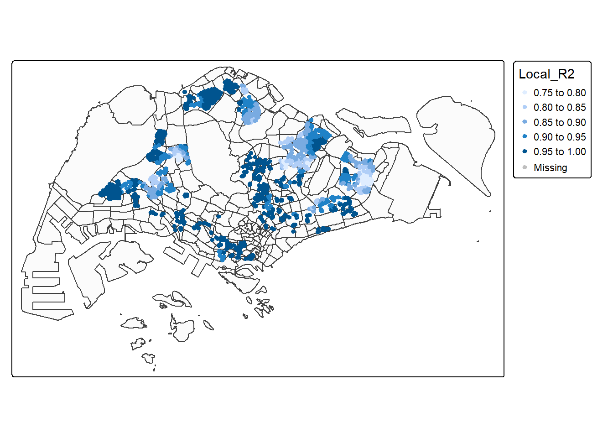
tmap_mode("plot")The Local R² map shows that the fixed GWR model achieves very high explanatory power across most of Singapore, with many neighbourhoods exhibiting Local R² values above 0.9. Areas with slightly lower Local R² highlight pockets where additional local factors—beyond the included structural and proximity variables—may be influencing HDB resale prices.
4.6 Visualising coefficient estimates
We will visualize all the coefficients estimates
tmap_mode("plot")
# 1. Get base map
base_map <- tm_shape(mpsz_svy21) + tm_polygons(alpha = 0.1)
# 2. Identify all SE fields
se_vars <- grep("_SE$", names(HDBresale_sf.fixed), value = TRUE)
# 3. Loop and produce arranged maps
plot_list <- lapply(se_vars, function(se_var) {
# matching TV variable
tv_var <- sub("_SE$", "_TV", se_var)
# pretty title
var_name <- sub("_SE$", "", se_var)
# SE map
map_se <- base_map +
tm_shape(HDBresale_sf.fixed) +
tm_dots(col = se_var,
border.col = "gray60",
border.lwd = 1) +
tm_layout(title = paste0(var_name, " (Std. Error)"))
# TV map
map_tv <- base_map +
tm_shape(HDBresale_sf.fixed) +
tm_dots(col = tv_var,
border.col = "gray60",
border.lwd = 1) +
tm_layout(title = paste0(var_name, " (t-value)"))
# Arrange side-by-side
tmap_arrange(map_se, map_tv, asp = 1, ncol = 2, sync = TRUE)
})
# 4. Display all maps
plot_list[[1]]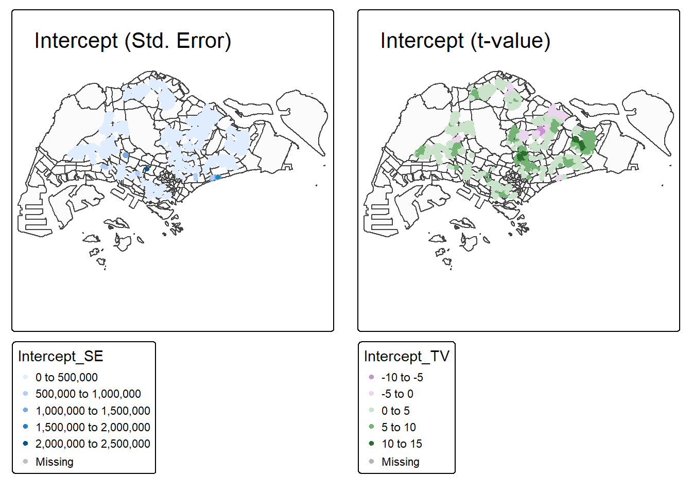
[[2]]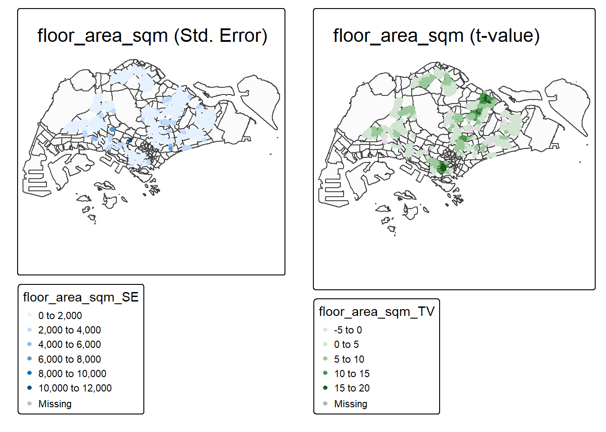
[[3]]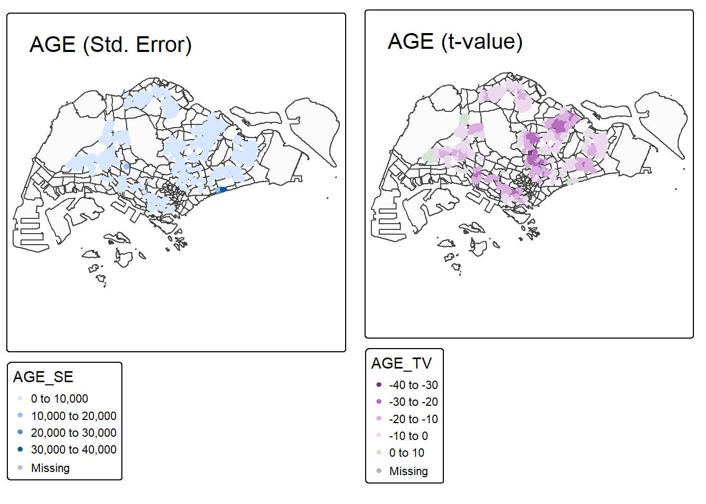
[[4]]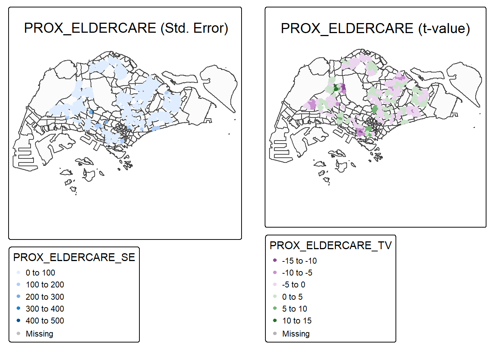
[[5]]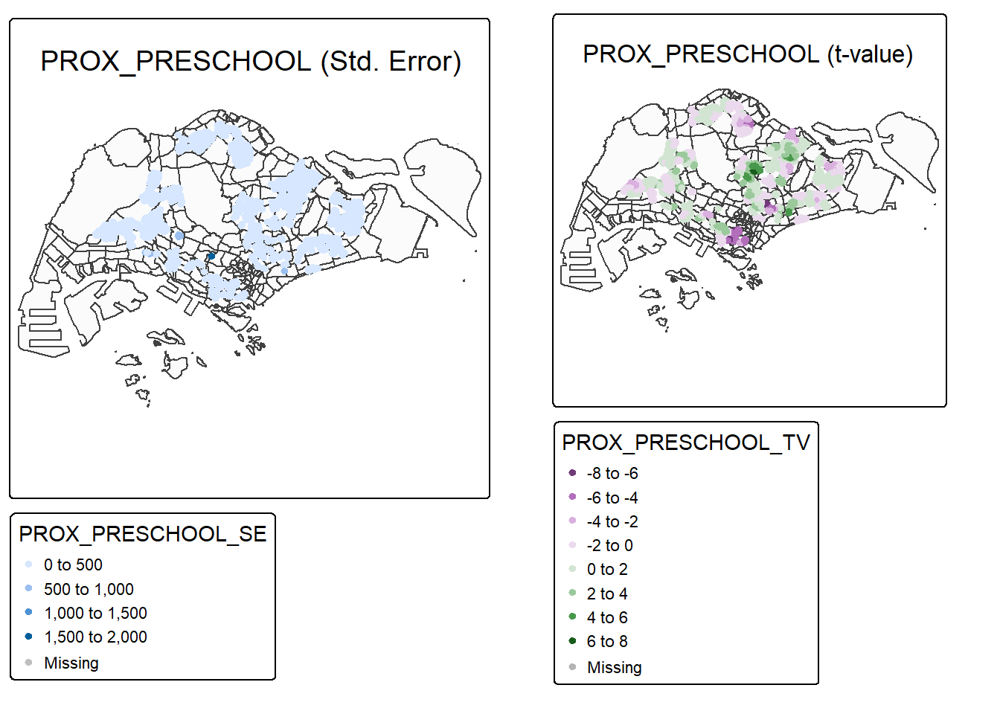
[[6]]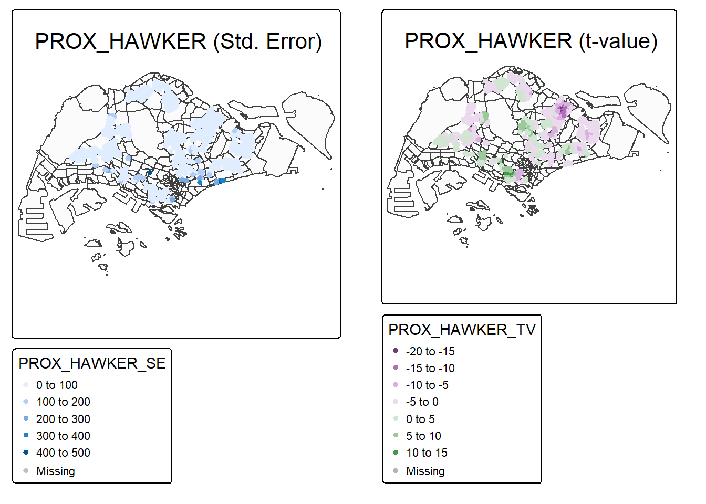
[[7]]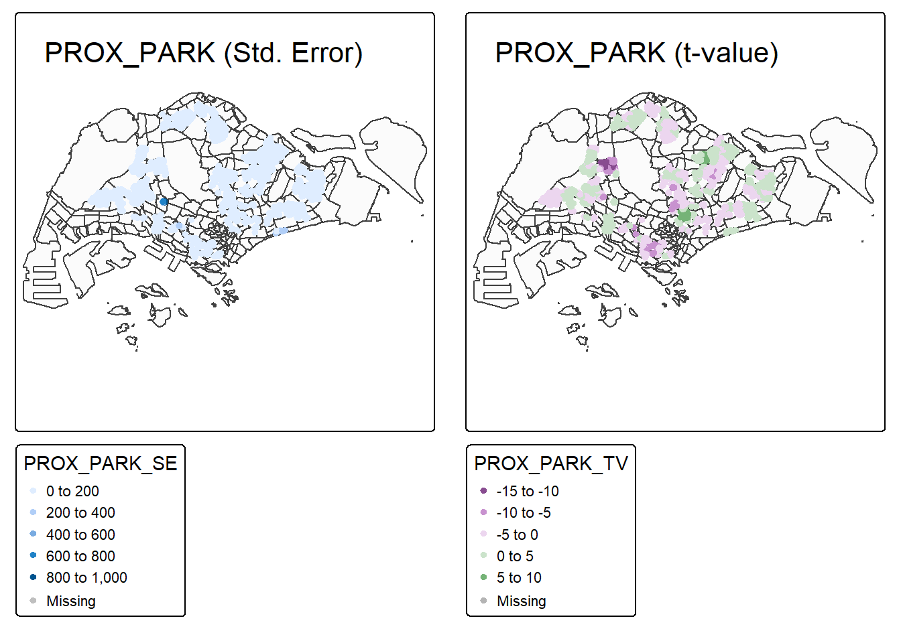
[[8]]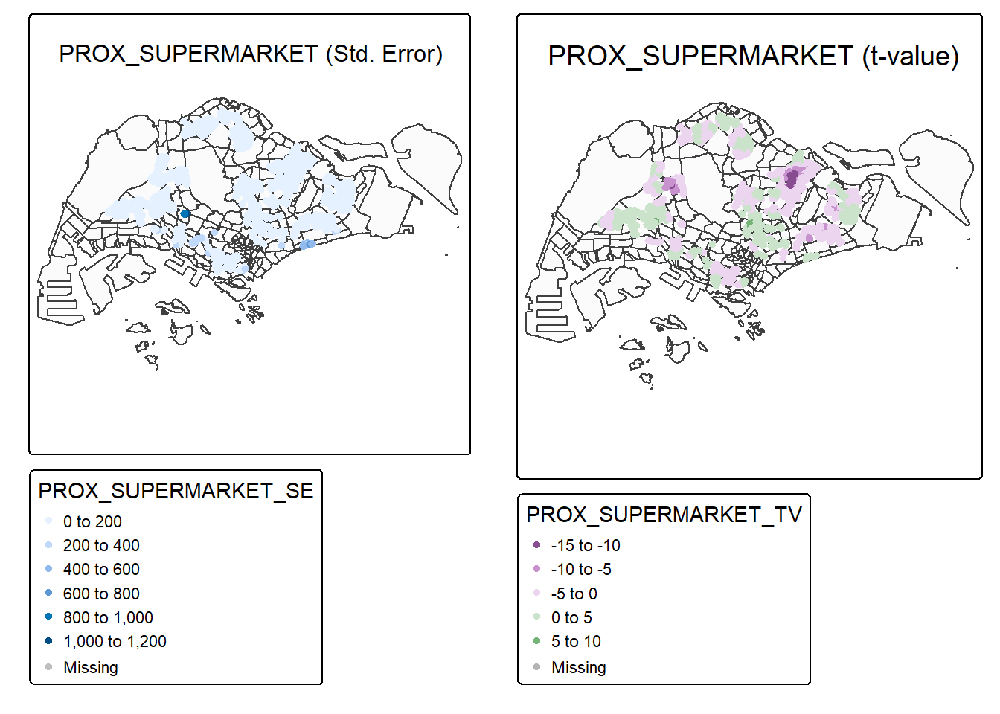
[[9]]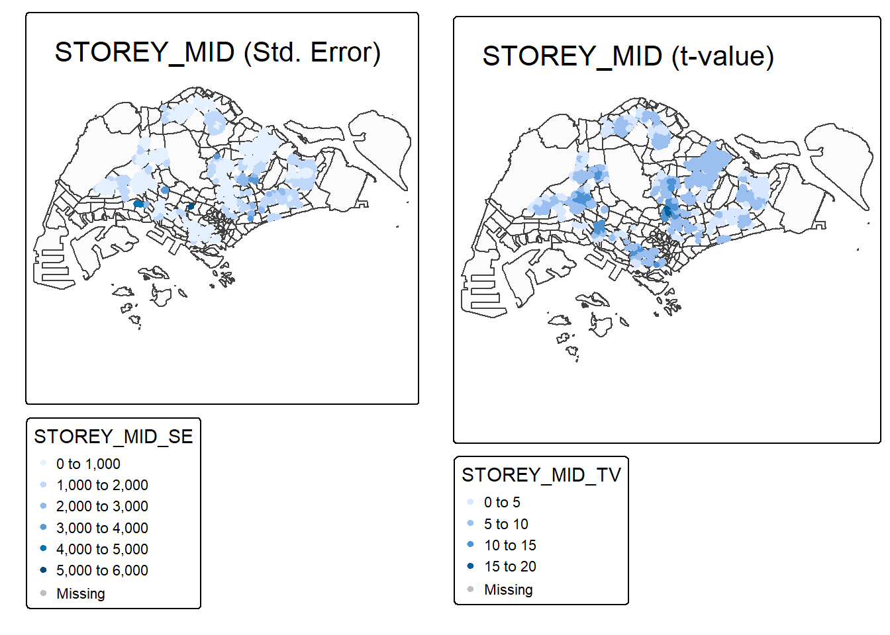
[[10]]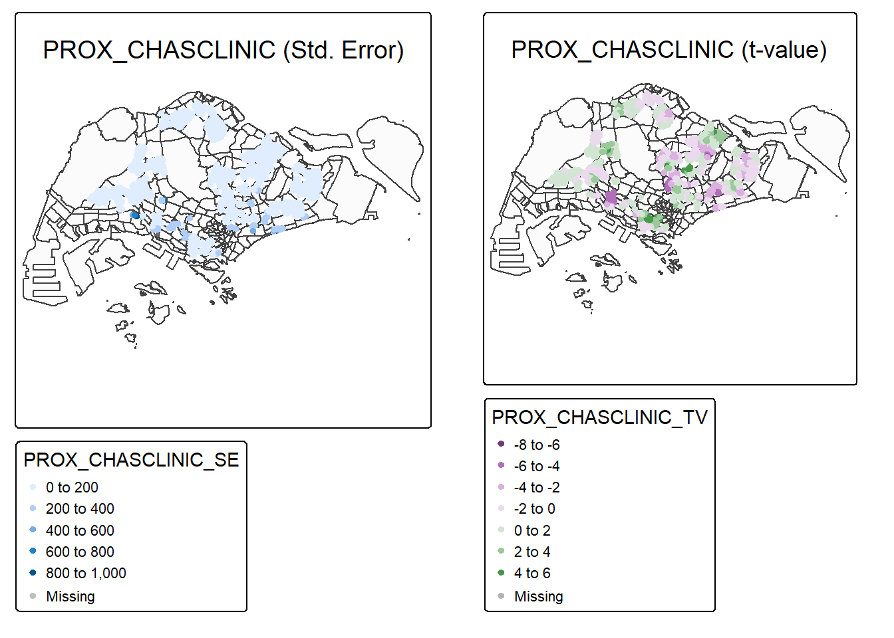
[[11]]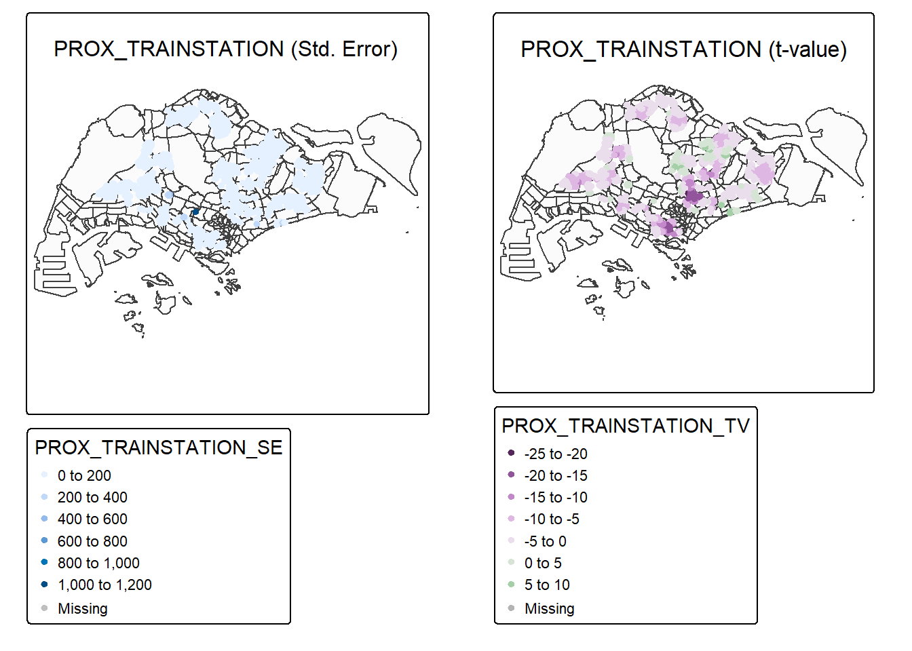
Floor Area (floor_area_sqm)
Floor area has consistently low standard errors in dense, mature estates, indicating highly stable coefficient estimates. Its t-values are strongly positive across most of Singapore, confirming that floor size is a universally significant driver of resale price.
Age of Flat (AGE)
AGE shows low standard errors in central and established towns, suggesting reliable estimation. The t-values are strongly negative almost everywhere, indicating that older flats systematically command lower resale prices.
Proximity to Eldercare (PROX_ELDERCARE)
Standard errors are higher in peripheral or newly developed towns, showing instability in sparse areas. T-values are generally weak or inconsistent, implying that eldercare proximity has little or highly localised influence on resale prices.
Proximity to Preschool (PROX_PRESCHOOL)
Standard errors are moderate across most regions, with slightly higher values in fringe areas. T-values vary between positive and negative clusters, revealing that preschool proximity affects prices differently depending on neighbourhood context.
Proximity to Hawker Centre (PROX_HAWKER)
Standard errors are low in areas with dense hawker distributions, suggesting stable coefficient estimation. T-values are strongly negative in many towns, indicating that being farther from hawkers tends to reduce resale prices.
Proximity to Park (PROX_PARK)
Standard errors vary considerably, with more stability in park-rich regions like the East. T-values show mixed directionality, meaning the value of park proximity differs widely across Singapore.
Proximity to Supermarket (PROX_SUPERMARKET)
This variable exhibits higher standard errors in less urbanised zones, showing weaker reliability. T-values are generally small and inconsistent, suggesting that supermarket access is not a major differentiator of resale prices.
Mid-Storey Indicator (STOREY_MID)
Standard errors are low and stable island-wide, indicating very reliable coefficient estimates. T-values are strongly positive everywhere, confirming that mid-storey flats consistently command a significant price premium.
Proximity to CHAS Clinic (PROX_CHASCLINIC)
Standard errors are moderate, with greater uncertainty in outer regions. T-values are mostly negative and significant in central and eastern towns, showing that households value closer access to subsidised clinics.
Proximity to Train Station (PROX_TRAINSTATION)
Standard errors are low in MRT-dense regions, reflecting strong data support. T-values are largely negative, indicating that proximity to train stations increases prices, though some areas show positive effects likely due to noise or structural factors.
Conclusion
We progressively transitioned from a simple linear regression to a multiple linear regression and finally to a Geographically Weighted Regression (GWR). This stepwise approach allowed us to increasingly capture the spatial structure embedded in the housing market. GWR, in particular, provided a much more suitable modelling framework by accounting for spatial heterogeneity and allowing relationships between predictors and resale prices to vary across Singapore. As a result, the final model better reflects the true spatial dynamics influencing HDB resale prices and produces a more robust and geographically sensitive prediction system.